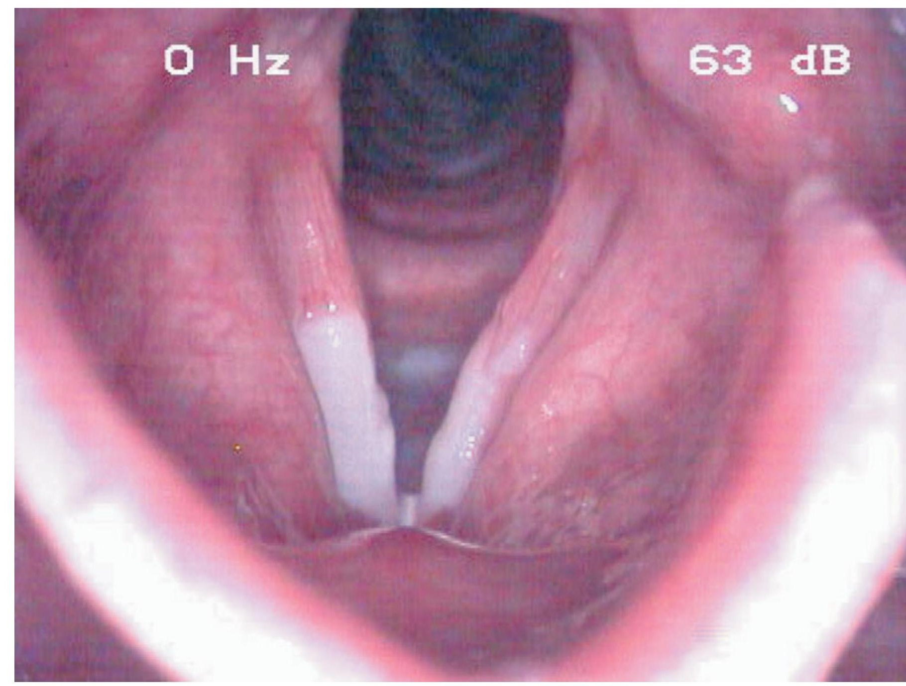
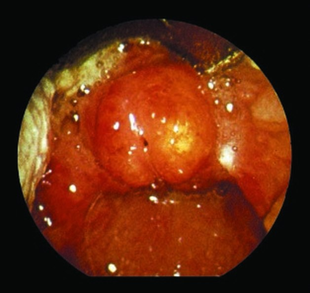
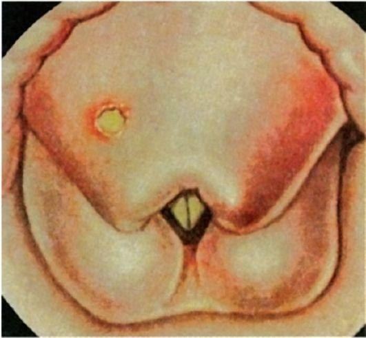

Острые ларингиты и трахеит
Острый ларингит: общие сведения
Определения
Ларингит — воспаление гортани любой этиологии.
Абсцедирующий, или флегмонозный, ларингит — острый ларингит с образованием абсцесса, чаще на язычной поверхности надгортанника или на черпалонадгортанных складках; проявляется резкими болями при глотании и фонации, иррадиирующими в ухо, повышением температуры тела, наличием плотного инфильтрата в тканях гортани.
Хондроперихондрит гортани — острое или хроническое воспаление хрящей гортани, т.е. хондрит, при котором воспалительный процесс захватывает надхрящницу и окружающие ткани. по: Нац. руководство, 2016, с. 856
Коды по МКБ-10
Острый ларингит и его формы кодируются так:
- J04 Острый ларингит и трахеит.
- J04.0 Острый ларингит.
- J04.2 Острый ларинготрахеит.
- J05 Острый обструктивный ларингит (круп) и эпиглоттит.
- J05.0 Острый обструктивный ларингит (круп).
по: Нац. руководство, 2016, с. 856
Классификация
Ларингиты подразделяют на острые и хронические. Формы острого ларингита:
- катаральный;
- отёчный;
- флегмонозный (инфильтративно-гнойный): инфильтративный и абсцедирующий.
по: Нац. руководство, 2016, с. 857
Этиология
Острый ларингит сравнительно редко развивается как самостоятельное заболевание и может быть воспалительной и невоспалительной природы. Обычно острый ларингит составляет симптомокомплекс ОРВИ (гриппа, парагриппа, аденовирусной инфекции), при которой в воспалительный процесс вовлечена также слизистая оболочка носа и глотки, а иногда и нижних дыхательных путей (бронхи, лёгкие). Первое место среди причин развития острого ларингита занимают респираторные вирусы (до 90% случаев), далее следуют бактериальная (стафилококки, стрептококки), хламидийная и грибковая инфекции. Острый эпиглоттит, абсцесс надгортанника чаще вызывает Haemophilus influenzae, Streptococcus pneumoniae, Streptococcus pyogenes.
Причины ларингита — инфекция, наружная и внутренняя травма шеи и гортани, в том числе ингаляционные поражения и попадание инородного тела, аллергия, гастроэзофагеальный рефлюкс. Большое значение имеет голосовая нагрузка, особенно с использованием твёрдой атаки. Возникновению воспалительной патологии гортани способствуют хронические заболевания бронхолёгочной системы, носа и околоносовых пазух, нарушения обмена веществ при сахарном диабете, гипотиреозе или заболеваниях желудочно-кишечного тракта, хроническая почечная недостаточность, патология разделительной функции гортани, злоупотребление спиртными напитками и табаком, перенесённая лучевая терапия. Специфические (вторичные) ларингиты развиваются при туберкулёзе, сифилисе, инфекционных (дифтерии) и системных заболеваниях (гранулематоз Вегенера, ревматоидный артрит, амилоидоз, саркоидоз, полихондрит и др.), а также при заболеваниях крови. Иммунные аспекты хронической воспалительной патологии гортани до конца не изучены. Обнаруживают нарушения иммунной системы.
Патогенез
В патогенезе развития острого отёка гортани и хронического отёчно-полипозного ларингита большую роль играют анатомические особенности пространства Рейнке. Значение имеет нарушение лимфооттока и местного водного обмена. Отёк слизистой оболочки может возникнуть в любом отделе гортани и быстро распространиться на другие, вызывая острый стеноз гортани.
Клиническая картина
Симптомы ларингита — охриплость, кашель и затруднение дыхания. Для острых форм характерно внезапное начало заболевания при общем хорошем состоянии или на фоне небольшого недомогания. Температура тела остаётся нормальной или повышается до субфебрильных цифр при катаральном остром ларингите. Фебрильная температура, как правило, отражает присоединение воспаления нижних дыхательных путей или переход катарального воспаления гортани во флегмонозное. Для инфильтративных и абсцедирующих форм острого ларингита характерны сильные боли в горле, нарушение глотания, в том числе жидкости, выраженная интоксикация, нарастающая симптоматика стеноза гортани. Выраженность клинических проявлений напрямую коррелирует с тяжестью воспалительных изменений. Общее состояние больного становится тяжёлым. Возможно развитие флегмоны шеи и медиастинита, сепсиса, абсцедирующей пневмонии.
Диагностика
При сборе анамнеза обращают внимание на наличие этиопатогенетических факторов развития заболевания, частоту рецидивов.
Лабораторные исследования
Больные с катаральной формой острого или хронического ларингита не нуждаются в специальном обследовании. Больным с острыми абсцедирующими, инфильтративными и хроническими ларингитами проводят комплексное общеклиническое обследование. Кроме того, необходимо микробиологическое, микологическое, гистологическое исследования; в ряде случаев для выявления этиологических факторов заболевания проводят диагностику с применением ПЦР.
Инструментальные исследования
Основной метод диагностики ларингита — ларингоскопия. Для картины острого ларингита характерна гиперемия, отёк слизистой оболочки гортани, усиление сосудистого рисунка. Голосовые складки, как правило, розовые или ярко-красные, утолщены, щель при фонации овальная или линейная, в узелковой зоне скапливается мокрота.
Подскладковый ларингит — валикообразное утолщение слизистой оболочки подголосового отдела гортани. Если он не связан с интубационной травмой, его выявление у взрослых требует дифференциальной диагностики с системными заболеваниями и туберкулёзом. При инфильтративном ларингите определяют значительную инфильтрацию, гиперемию, увеличение в объёме и нарушение подвижности поражённого отдела гортани. Часто видны фибринозные налёты, в месте формирования абсцесса просвечивает гнойное содержимое. При тяжёлой форме ларингита и хондроперихондрите гортани характерны болезненность при пальпации, нарушение подвижности хрящей гортани, возможна инфильтрация и гиперемия кожных покровов в проекции гортани. Абсцесс надгортанника выглядит как шаровидное образование на его язычной поверхности с просвечивающим гнойным содержимым.
Для уточнения тяжести воспалительного процесса и дифференциальной диагностики применяют рентгеновскую или компьютерную томографию гортани и трахеи, эндофиброларинготрахеоскопию, исследование функции внешнего дыхания для оценки степени дыхательной недостаточности при ларингите, сопровождающемся стенозом воздухопроводящих путей. У больных с флегмонозными и абсцедирующими ларингитами проводят рентгенографию лёгких, рентгеновскую томографию средостения. Для исключения патологии пищевода, особенно у больных с гнойными процессами в гортани, показана эзофагоскопия. Применение микроларингоскопии и микроларингостробоскопии позволяет провести дифференциальную диагностику с раком, папилломатозом и туберкулёзом гортани.
Дифференциальная диагностика
Дифференциальную диагностику проводят в первую очередь с раком и туберкулёзом гортани. Во всех случаях подголосового ларингита, артрита перстнечерпаловидного сустава следует исключать системное заболевание. Вовлечение в патологический процесс гортани при гранулематозе Вегенера встречается в 6–25% случаев в виде подскладкового ларингита, сопровождающегося стенозом подголосового отдела. Изолированное поражение гортани при склероме наблюдается в 4,5% случаев, чаще в процесс вовлечены нос, носоглотка и гортань. При этом в подголосовом пространстве формируются бледно-розовые бугристые инфильтраты. Процесс может распространяться в трахею или в краниальном направлении на другие отделы гортани.
Встречается первичный амилоидоз гортани (узловая или диффузно-инфильтративная формы) и вторичный, развивающийся на фоне хронических воспалительных системных заболеваний (болезнь Крона, ревматоидный артрит, туберкулёз и др.). Чаще поражение носит диффузный характер при интактной слизистой оболочке, иногда с распространением на трахеобронхиальное дерево. Отложения амилоида локализуются преимущественно в надголосовом отделе гортани, иногда в виде подскладкового ларингита. Саркоидоз встречается в гортани в 6% случаев в виде эпиглоттита и гранулематоза. Голосовые складки поражаются редко. При ревматоидном артрите патологию гортани диагностируют у 25–30% пациентов. Клинически заболевание проявляется в виде артрита перстнечерпаловидного сустава. Дифференциальный диагноз проводят на основании общеклинических, серологических исследований и биопсии.
Для туберкулёза гортани характерен полиморфизм изменений. Отмечают образование милиарных узелков, инфильтратов, которые подвергаются распаду с образованием грануляций, язв и рубцов. Нередко образуются туберкуломы и хондроперихондриты. Сифилис гортани проявляется в виде эритемы, папул и кондилом. Часто формируются язвы, покрытые серовато-белым налётом.
Дифференциальную диагностику абсцедирующего и флегмонозного ларингита проводят с врождённым поликистозом корня языка, нагноившимся ларингоцеле, раком гортани или входа в пищевод. Абсцесс надгортанника необходимо дифференцировать с эктопированной щитовидной железой.
Показания к консультации других специалистов
Для уточнения этиологии развития воспалительного процесса в гортани показана консультация гастроэнтеролога, пульмонолога, аллерголога, иммунолога, эндокринолога, миколога, терапевта, ревматолога и фтизиатра. Пациентам с тяжёлыми флегмонозными ларингитами при подозрении на развитие флегмоны шеи или медиастинита показана консультация хирурга; больным с хроническим гиперпластическим ларингитом — онколога.
Лечение
Цель лечения — элиминация воспалительного процесса в гортани, восстановление голоса, предотвращение хронизации воспалительного процесса.
Показания к госпитализации
Лечение острого катарального ларингита проводят в амбулаторных условиях. Госпитализации в стационар подлежат все пациенты с отёчными ларингитами, эпиглоттитами и абсцессами надгортанника, осложнёнными формами заболевания (инфильтративной и абсцедирующей) при угрозе развития стеноза гортани и травмах. Госпитализация показана также при необходимости проведения хирургического лечения.
Немедикаментозное лечение
Большое значение имеет ограничение голосовой нагрузки, при этом шёпотная речь запрещена. Высокую клиническую эффективность доказала местная противовоспалительная, особенно ингаляционная терапия. С этой целью применяют антибактериальные, муколитические, гормональные лекарственные средства, растительные препараты с противовоспалительным и антисептическим эффектом, а также минеральную воду. Хороший эффект даёт применение физиотерапевтических методов: электрофореза 1% калия йодида, гиалуронидазы или кальция хлорида на гортань, терапевтического лазера, микроволн, фонофореза, в том числе эндоларингеального и др. При осложнённых абсцедирующих и флегмонозных ларингитах, хондроперихондритах возможно применение гипербарической оксигенации. В стадии реконвалесценции и в тех случаях, когда напряжённая фонация является одним из этиопатогенетических факторов при развитии гипотонусных расстройств голосовой функции в исходе воспаления, показана фонопедия и стимулирующая терапия.
Медикаментозное лечение
Большое значение имеет терапия сопутствующей патологии верхних и нижних дыхательных путей, иммунного статуса, гастроэзофагеального рефлюкса.
Антибактериальную терапию при остром ларингите и обострении хронического при выраженных воспалительных явлениях с присоединением гнойной экссудации назначают эмпирически, с применением препаратов широкого спектра действия (амоксициллин + клавулановая кислота, фторхинолоны). Периоперационную антибиотикотерапию назначают в случае проведения хирургического вмешательства при прямой микроларингоскопии, имплантационных методах коррекции, большом объёме вмешательства. При грибковом ларингите назначают антимикотические препараты. Проводят противоотёчную и десенсибилизирующую терапию, при наличии вязкой мокроты или сухости слизистой оболочки назначают муколитики и секретолитики, ферментные препараты, стимулирующую и рассасывающую терапию, лекарственные средства, улучшающие микроциркуляцию и нервно-мышечную передачу, а также повышающие тонус мышц. Применение специфической терапии при специфических ларингитах не исключает использования местной и общей противовоспалительной терапии. Большое внимание следует уделять лечению больных с инфильтративными и абсцедирующими ларингитами. Им показаны массивная дезинтоксикационная терапия, парентеральное питание, коррекция водно-солевого обмена, внутривенная антибактериальная терапия.
Хирургическое лечение
При абсцедирующем ларингите производят вскрытие абсцессов при непрямой ларингоскопии ножом Тобольта. При осложнениях в виде флегмоны шеи или медиастинита проводят комбинированное хирургическое лечение наружным и эндоларингеальным доступом.
Дальнейшее ведение и прогноз
Пациентам голосовых профессий после перенесённого острого ларингита показано наблюдение фониатра до полного восстановления голоса.
Сроки нетрудоспособности зависят от профессии пациента: у лиц голосовых профессий они удлиняются до восстановления голосовой функции. Неосложнённый острый ларингит разрешается в течение 7–14 дней; инфильтративные формы — около 14 дней.
При развитии острого ларингита необходимо ограничение голосовой нагрузки. Запрещён приём горячей, холодной и острой пищи, спиртных напитков, курение, паровые ингаляции. Показано постоянное увлажнение воздуха в помещении с помощью специальных увлажнителей. При неосложнённых формах ларингита прогноз благоприятный. по: Нац. руководство, 2016, с. 857–862
Острый катаральный ларингит
Этиология и патогенез
Острый катаральный ларингит характеризуется острым воспалением слизистой оболочки гортани, обусловленным ее инфицированием банальной микробиотой.
Обычно острый катаральный ларингит является следствием системного заболевания, определяемого как ОРЗ, началом которого служат острые ринофарингиты, а развитием — нисходящее воспаление слизистой оболочки гортани и трахеи. В ряде случаев гортань остается интактной, в других — именно в ней развиваются основные явления острого воспаления. Заболевание чаще встречается у мужчин, подверженных вредным бытовым привычкам (курение, употребление алкоголя) или профессиональным атмосферным вредностям. Важную роль в провоцировании острого катарального ларингита и активизации условно-патогенной микрофлоры играют сезонные климатические условия (холод, высокая влажность), наиболее активно проявляющие себя весной и осенью. Вдыхаемый холодный воздух вызывает неблагоприятные местные сосудистые реакции в виде спазма или расширения сосудов гортани, нарушения микроциркуляции, снижения местного иммунитета и, как следствие, активизацию микрофлоры. Этим явлениям способствует также горячий сухой воздух и различные профессиональные вредности в виде химических паров или мелкодисперсных пылевых частиц. К эндогенным факторам риска относятся общее ослабление организма при заболеваниях внутренних органов (печень, почки, эндокринная система), отрицательно влияющих на процессы обмена веществ, алиментарная и витаминная недостаточность.
Важную роль в возникновении острого катарального ларингита играют хронические банальные риниты и риносинуситы, гипертрофические и полипозные риниты, искривления перегородки носа, нарушающие носовое дыхание, а также аденоидиты, хронический тонзиллит и другие хронические заболевания носоглотки и глотки. Существенное значение может иметь функциональное перенапряжение голосовой функции, особенно в неблагоприятных климатических условиях.
В качестве этиологических факторов выступают гемолитический и зеленящий стрептококки, стафилококк, пневмококк, катаральный микрококк. Чаще всего острый катаральный ларингит обусловлен полимикробной ассоциацией, которая может быть активизирована гриппозной инфекцией, и тогда он выступает в качестве микроэпидемических вспышек, чаще всего возникающих в детских коллективах.
Острые катаральные и более глубокие воспалительные реакции гортани могут возникать вследствие воздействия различных травматических факторов (инородные тела, химические ожоги, повреждения при интубации гортани или зондировании желудка). по: Бабияк и соавт., т. 2, с. 66–67
Острое воспаление слизистой оболочки гортани (laryngitis catarrhalis acuta) нередко наблюдают как самостоятельное заболевание. Часто оно бывает продолжением катарального воспаления слизистой оболочки носа, глотки, в том числе при кори, коклюше, гриппе, тифе, ревматизме и т.д. Как самостоятельное заболевание острый катаральный ларингит возникает в результате активизации флоры, сапрофитирующей в гортани, под влиянием таких факторов, как переохлаждение, раздражение никотином при неумеренном курении, злоупотреблении алкоголем, перенапряжении голосовых складок в момент крика, воздействии некоторых профессиональных вредностей (пыли, паров, газов и др.). по: Пальчун, учебник для колледжей, с. 173
Острые воспалительные заболевания гортани и трахеи часто встречаются как проявление острых воспалительных заболеваний верхних дыхательных путей. Причиной может быть самая разнообразная флора: бактериальная, грибковая, вирусная, смешанная. Среди экзогенных играют роль такие факторы, как переохлаждение, раздражение слизистой оболочки, воздействие профессиональных вредностей (пыль, газы и др.), длительный громкий разговор на холоде, употребление очень холодной или очень горячей пищи. Эндогенные факторы: пониженная иммунная реактивность, болезни желудочно-кишечного тракта, аллергические реакции, возрастная атрофия слизистой. Острый катаральный ларингит часто возникает в период полового созревания, когда происходит мутация голоса. Среди разнообразных этиологических факторов в возникновении данного заболевания играет роль бактериальная флора — В-гемолитический стрептококк, streptococcus pneumoniae, вирусные инфекции; вирусы гриппа (А и В), парагриппа, коронавирус, риновирус, грибковая флора. Часто встречается смешанная флора. по: Пальчун, Магомедов, Лучихин, учебник, с. 355–357
Острый ларингит — острое воспаление гортани обычно вторичного происхождения и сочетается с заболеваниями носоглотки или нижних дыхательных путей (восходящее и нисходящее инфицирование).
Острый ларингит чаще наблюдается у детей старшего возраста.
Развитию заболевания способствуют вдыхание холодного воздуха через рот, питье холодной воды при перегревании тела, перенапряжение голосового аппарата, вирусная или бактериальная инфекция, Возможно, имеют значение механические, термические, химические раздражители. Острый ларингит может быть проявлением острых инфекционных заболеваний (грипп, корь, скарлатина и пр.). Предрасполагают к острому ларингиту хронический ринофарингит, гнойный синусит, ротовое дыхание. К эндогенным факторам относятся нарушения обмена веществ с повышенной чувствительностью слизистой оболочки гортани даже к слабым раздражителям, повышенное потоотделение при вегетоневрозах. по: Богомильский, Чистякова, с. 354–355
Патологическая анатомия
В начальной стадии острого катарального ларингита наблюдается гиперемия слизистой оболочки в результате пареза (расширения) сосудов, за которой следует подслизистый выпот транссудата и инфильтрация слизистой оболочки лейкоцитами и в особо острых случаях — эритроцитами с микрокровоизлияниями. Геморрагические формы наблюдаются при вирусной этиологии заболевания. Вслед за транссудатом следует воспалительный экссудат вначале слизистого, затем гнойного характера, содержащий большое количество лейкоцитов и десквамированных клеток эпителия слизистой оболочки. В некоторых случаях токсическое воздействие воспалительного процесса обусловливает распространение отека в подскладочное пространство, особенно часто возникающее у детей младшего возраста вследствие наличия у них в этой области рыхлой соединительной ткани. В этом случае говорят о ложном крупе (см. раздел «Острый ларингит детей»).
Острый катаральный ларингит может сопровождаться вторичным миозитом внутренних мышц гортани с преимущественным поражением голосовых мышц; реже возникают явления артрита перстнечерпаловидных суставов, что, как правило, ведет к охриплости голоса вплоть до полной афонии. Кашель и голосовая нагрузка нередко приводят к эрозиям слизистой оболочки в области свободного края голосовых складок, что обусловливает болезненность при фонации и кашле.
Клиническая картина
В начале заболевания возникает ощущение сухости, першения и жжения в области гортани, боль при фонации; затем появляются осиплость голоса или афония (при парезе голосовых складок), лающий кашель, вызывающий тягостные рвущие боли. Через день или два появляется мокрота, при этом интенсивность болевого синдрома и гиперестезии резко снижаются. Общее состояние при типичных неосложненных формах страдает мало. Иной раз, особенно в тех случаях, когда острый катаральный ларингит возникает на фоне генерализованного ОРЗ, температура тела, сопровождаемая ознобом, может повышаться до 38 °С. В этих случаях воспалительный процесс, как правило, распространяется на трахею и при тяжелых формах — на бронхи и легочную ткань (бронхопневмония). Такое развитие ОРЗ характерно для неблагоприятной эпидемической обстановки.
В период кульминации заболевания эндоскопическая картина гортани характеризуется гиперемией всей слизистой оболочки, особенно выраженной в области голосовых складок и грушевидных синусов, нередко распространяющейся на верхние отделы трахеи, а также явлениями отека, наличием слизисто-гнойного экссудата, несмыканием голосовых складок.
Миозит внутренних мышц гортани проявляется парезом щитоперстневидных мышц, который может продолжаться и спустя некоторое время после ликвидации местных воспалительных явлений, особенно если в разгар заболевания не соблюдается голосовой режим. У лиц плеторических (полнокровных) или страдающих хроническими инфекциями заболевание ВДП может приобретать затяжной характер и переходит в хроническую форму воспаления гортани.
Через 5–6 дней выраженность явлений дисфонии постепенно снижается, а признаки катарального воспаления полностью исчезают к 12–15 му дню от начала заболевания.
В некоторых случаях наблюдаются локализованные острые катаральные ларингиты. Иногда резкая гиперемия и инфильтрация слизистой оболочки охватывают только надгортанник — epiglottitis acuta; в этом случае преобладают жалобы на боль при глотании, поскольку при этом акте надгортанник спускается книзу и прикрывает вход в гортань. В других случаях воспалительный процесс выражен преимущественно в слизистой оболочке складок преддверия или только голосовых складок, при этом преобладает расстройство фонации (осиплость или афония). Нередко резкая гиперемия слизистой оболочки наблюдается только в пределах черпаловидных хрящей и межчерпаловидного пространства (laryngitis acuta posterior), что сопровождается сильным кашлем, поскольку в этой области заложены весьма чувствительные кашлевые рецепторы верхнего гортанного нерва. Наиболее тяжелую форму изолированно го ларингита представляет подскладочный ларингит (laryngitis subchordalis aut sub plicae vocalis acuta) — при нем наблюдается воспаление и отек нижней поверхности голосовых складок и подскладочного пространства, стенки которого содержат рыхлую подслизистую соединительную ткань. Это заболевание встречается преимущественно у детей c экссудативным или лимфатическим диатезом. Форма подскладочного ларингита, при которой периодически наступают спазмы гортани, называется ложным крупом (см. раздел «Острый ларингит детей»).
При разлитом остром ларингите слизистая оболочка резко гиперемирована, отек наиболее выражен в области вестибулярных и черпалонадгортанных складок. Острый край голосовых складок утолщается и приобретает форму округлых валиков. При этом стробоскопическим исследованием выявляется ограничение подвижности и асинхронность колебаний голосовых складок. Эпителий местами слущивается, из-за чего местами образуются язвочки. Из расширенных сосудов иногда просачивается кровь, образуя на поверхности слизистой оболочки голосовых складок багрово-красные точки и полоски (laryngitis acuta haemorrhagica), что бывает чаще при вирусном гриппе (см. далее). При этой форме острого ларингита количество экссудата увеличивается, но он по причине содержания большого количества белка быстро высыхает в корки, покрывающие значительную часть внутренней поверхности гортани (laryngitis acuta sicca).
Осложнения возникают нечасто и наблюдаются у лиц, ослабленных предшествующими инфекционными заболеваниями или сопутствующей вирусной инфекцией. Эти осложнения проявляются распространением воспалительного процесса в подслизистые слои, что сопровождается выраженным отеком вплоть до обструктивного ларингита с нарушением дыхательной функции гортани, особенно часто возникающего у детей в виде ложного крупа (подскладочного ларингита). Абсцесс гортани, перихондрит и хондрит возникают редко, однако их возникновение всегда должно быть предусмотрено в лечебной тактике и при малейшем подозрении на их возможность следует использовать самые эффективные методы лечения. по: Бабияк и соавт., т. 2, с. 67–69


Заболевание характеризуется появлением охриплости, першения, саднения и сухости в горле. Одновременно с этими субъективными ощущениями в начале болезни возникает сухой кашель, а затем с мокротой. по: Пальчун, учебник для колледжей, с. 173
Клиническая картина характеризуется появлением охриплости, першения, чувства дискомфорта и инородного тела в горле. Нарушения голосообразовательной функции выражаются в виде различной степени дисфонии. Иногда больного беспокоит сухой кашель, который в дальнейшем сопровождается отхаркиванием мокроты. Патоморфологические изменения сводятся к нарушению кровообращения, гиперемии, мелкоклеточной инфильтрации и серозному пропитыванию слизистой оболочки гортани. При распространении воспаления на вестибулярный отдел гортани голосовые складки могут быть прикрыты отечными, инфильтрированными вестибулярными складками. по: Пальчун, Магомедов, Лучихин, учебник, с. 355–357
Различают разлитой (диффузный) и ограниченный острый ларингит.
Заболевание обычно начинается постепенно, без повышения температуры тела или с субфебрильной температурой и при общем удовлетворительном состоянии, но может начинаться и внезапно. Острый ларингит сопровождается резко выраженной гиперестезией гортани. Больные жалуются на ощущение сухости, жжения, першения, саднения в горле, сухой мучительный судорожный кашель. Иногда появляется болезненность при глотании. Голос становится грубым, наблюдается охриплость или афония, утомляемость голоса. Сухой кашель сменяется влажным, со значительным отделением сначала слизистой, а затем слизисто-гнойной мокроты. Патогистологически выявляются гиперемия, мелкоточечная инфильтрация, серозное пропитывание слизистой оболочки, подслизистой ткани и мышц гортани. Увеличенное проникновение лейкоцитов через межэпителиальные щели и исчезновение membrana limitans наряду с усиленным функционированием слизистых желез сопровождаются разрывами, десквамацией и частичным отторжением цилиндрического эпителия. по: Богомильский, Чистякова, с. 355
Диагностика и дифференциальная диагностика
Диагноз устанавливают на основе анамнеза (наличие простудного фактора и др.), острого начала, симптомов заболевания и данных эндоскопии гортани. Дифференциальный диагноз проводят с гриппозным и коревым ларингитом, дифтерией гортани и другими инфекционными заболеваниями, характеризующимися поражением гортани (см. классификацию болезней гортани). В частности, дифтерия гортани не может быть отвергнута даже в тех случаях, когда она протекает атипично, без образования дифтерийных пленок (истинного крупа). В сомнительных случаях проводят бактериологическое исследование слизисто-гнойных выделений, полученных с поверхности слизистой оболочки гортани, и превентивное лечение противодифтерийной сывороткой.
Также трудно дифференцируется от банального острого катарального ларингита сифилитический ларингит, поражающий гортань во вторичной стадии этого заболевания; общее хорошее состояние, отсутствие выраженных признаков болевого синдрома, наличие высыпаний на коже и слизистой оболочки полости рта должно насторожить в отношении возможности сифилитического заболевания гортани.
Милиарный туберкулез гортани в начальной стадии может проявляться признаками острого банального ларингита. В этих случаях учитывают общее состояние больного и данные пульмонологического обследования наряду со специфическими серологическими реакциями. Ларингит аллергического генеза отличается от острого катарального ларингита наличием преимущественно студенистого отека слизистой. по: Бабияк и соавт., т. 2, с. 69
Здесь же иногда бывают точечные кровоизлияния в толщу слизистой оболочки. По мере развития воспалительного процесса в гортани появляется слизь, которая высыхает, быстро становится вязкой, а затем превращается в корки. При отрыве такой корки от слизистой оболочки в момент кашлевого толчка возникает быстропреходящее кровохарканье. В ряде случаев воспаление в гортани может перейти в отечно-инфильтративную форму. У детей ларингит необходимо дифференцировать от распространенной формы дифтерии. Патологоанатомические изменения в этом случае будут характеризоваться развитием фибринозного воспаления с образованием грязно-серых пленок, интимно связанных с подлежащими тканями. по: Пальчун, учебник для колледжей, с. 173–174
При диффузной форме заболевания при ларингоскопии определяют рассеянную гиперемию и набухлость слизистой оболочки гортани. При ограниченной форме эти изменения наблюдаются на голосовых складках, в межчерпаловидном или подголосовом пространстве. На фоне гиперемированной слизистой оболочки видны расширенные поверхностные кровеносные сосуды. Голосовые складки розовые, отечные, в просвете гортани вязкий секрет в виде слизисто-гнойных тяжей. При фонации смыкание голосовых складок неполное из-за миозита голосовых мышц. Голосовая щель имеет форму овала. При геморрагической форме ларингита в слизистой оболочке выявляются кровоизлияния, при фибринозной — налеты фибрина. При отторжении эпителия образуются эрозии. Отек выражен незначительно и затрудненного дыхания, как правило, не наблюдается. по: Богомильский, Чистякова, с. 355
Диагностика не представляет особых трудностей, поскольку основывается на патогномоничных признаках: острое появление охриплости, часто связанное с определенной причиной (холодная пища, ОРВИ, простуда, речевая нагрузка и др.); характерная ларингоскопическая картина — выраженная гиперемия слизистой всей гортани или только голосовых складок, утолщение, отечность и неполное смыкание голосовых складок; отсутствие температурной реакции, если нет респираторной инфекции. К острому ларингиту стоит относить и те случаи, когда имеется только краевая гиперемия голосовых складок, поскольку этот ограниченный процесс, как и разлитой, склонен переходить в хроническую форму. Рожистое поражение слизистой гортани отличается от катарального процесса четкой очерченностью границ и одновременным заболеванием кожных покровов лица. по: Пальчун, Магомедов, Лучихин, учебник, с. 355–357
Лечение
Основным в лечении является строгий голосовой режим с исключением звонкой фонации. В необходимых случаях допускается шепотная речь. Больной в течение 5–7 дней должен находиться в теплом помещении с повышенной влажностью. Исключается острая, соленая, горячая пища, курение, употребление алкоголя. В легких случаях достаточны голосовой покой, щадящая (не острая) диета, теплое питье, при кашле — противокашлевые и отхаркивающие средства. Этого бывает достаточно для спонтанного выздоровления больного. В случаях средней тяжести, проявляющихся сильным кашлем, повышением температуры тела до 37,5 °С, слабостью, болевым синдромом, назначают комплексное лечение, включающее физиотерапевтические, медикаментозные симптоматические, противоотечные и антибактериальные средства преимущественно местного действия. При обильной вязкой мокроте назначают ингаляции протеолитических ферментов, обладающих муколитическим действием.
Из физиотерапевтических средств показаны полуспиртовые согревающие компрессы на переднюю поверхность шеи, в некоторых случаях, при подозрении на усугубление воспалительного процесса — УВЧ на область гортани в сочетании с антигистаминными препаратами и антибиотиками местного действия (фузафунгин устарело снят с производства в 2016 г.). В. Т. Пальчун и соавт. (2000) рекомендуют эффективную смесь для вливания в гортань, состоящую из 1% ментолового масла, эмульсии гидрокортизона с добавлением нескольких капель 0,1% раствора эпинефрина гидрохлорида. Средствами выбора являются дозированные аэрозольные препараты камфора + хлоробутанол + эвкалипта листьев масло + левоментол и камфомен устарело в ГРЛС не зарегистрирован, комбинированный препарат местного действия ларипронт, в состав которого входят лизоцим и хлорид деквалиния, обладающий противомикробным и антивирусным действием. При обильной и вязкой мокроте с образованием корок в гортани назначают муколитические препараты, в частности месну для ингаляций в разведенном виде и др., а также препараты термопсиса, нашатырно-анисовые капли, бромгексин, терпингидрат, амброксол и др. Одновременно назначают витамины (С, пентавит устарело в ГРЛС не зарегистрирован), глюконат кальция, антигистаминные препараты (мебгидролин, дифенгидрамин).
При тяжелых острых катаральных ларингитах с затяжным течением и тенденцией генерализации процесса в направлении НДП к описанному лечению добавляют антибиотики широкого спектра действия. по: Бабияк и соавт., т. 2, с. 69–70
Лечение в первую очередь должно предусматривать щажение органа. Больному необходимо соблюдать голосовой режим (режим молчания) до стихания острых воспалительных явлений; необходимо прекратить прием острой, холодной пищи, спиртных напитков и курение. Лекарственная терапия направлена на ликвидацию воспалительного процесса в гортани и предупреждение осложнений. В связи с этим следует назначить аэрозоль фузафунгина устарело фузафунгин снят с производства в 2016 г. или ингаляции растворами антибиотиков: 200 000 ЕД бензилпенициллина + 250 000 ЕД стрептомицина + 5,0 мл изотонического раствора хлорида натрия. по: Пальчун, учебник для колледжей, с. 174
Несоблюдение щадящего голосового режима не только задержит выздоровление, но и будет способствовать переходу процесса в хроническую форму. Лекарственная терапия в основном носит местный характер. Эффективны ингаляции и орошение слизистой гортани комбинированными препаратами, содержащими противовоспалительные компоненты (фузафунгин устарело фузафунгин снят с производства в 2016 г., лизаты бактерий и др.), вливание в гортань лекарственных смесей из кортикостероидных, антигистаминных препаратов и антибиотиков в течение 7–10 дней. В комнате, где находится больной, желательно поддерживать повышенную влажность воздуха. При стрептококковых и пневмококковых инфекциях, сопровождающихся повышением температуры тела, интоксикацией организма, назначают общую антибиотикотерапию: препараты пенициллинового ряда (феноксиметилпенициллин по 1 млн 4–6 раз в сут, амоксициллин 500 мг 2 раза в сут) или макролиды (например, азитромицин по 500 мг 1 раз в сут). по: Пальчун, Магомедов, Лучихин, учебник, с. 357–358
Постельный режим, максимальный голосовой покой, нераздражающая пища (ограничение острых и горячих блюд), щелочные минеральные воды (боржом, ессентуки №4), обильное теплое питье (молоко пополам с боржомом или со сливочным маслом). Отвлекающая терапия (горчичники на шею. грудную клетку, к икроножным мышцам, сухая горчица в носки у детей младшего возраста, согревающий компресс на шею), Физиотерапия: УВЧ-терапия, паровые или аэрозольные ингаляции 2–3% раствора соды, хлорэтона, сосудосуживающих средств, у детей старше 5 лет — 0,5% раствора ментола, ингаляции фитонцидов (лук, чеснок, хвоя), готовые формы аэрозолей. Препараты, успокаивающие кашель, и отхаркивающие средства. У детей старшего возраста делают вливания в гортань (инстилляции) 1–1,5 мл 0,25-0,5% раствора ментола в персиковом или оливковом масле. При ларингитах инфекционного происхождения в лечебный комплекс включают антибиотики и сульфаниламидные препараты. При затяжном течении заболевания назначают малые дозы Йода в виде микстуры или внутримышечно по 0,3-1,0 мл 2–3% раствора йодида натрия 3-4 раза в день либо внутривенно 10% раствор по 5–10 мл на одно вливание. по: Богомильский, Чистякова, с. 355–356
Прогноз и профилактика
Прогноз в целом благоприятен, однако при сопутствующих заболеваниях ВДП, не исключенных бытовых и профессиональных вредностях острый катаральный ларингит может приобрести другие формы неспецифического ларингита с пере ходом в хроническую стадию. Прогноз при осложненных формах в виде перихондрита, абсцесса гортани и т. п. определяется степенью тяжести осложнения и его последствиями (деформирующий рубцовый стеноз гортани, дефицит дыхательной функции, стойкий парез внутренних мышц гортани, анкилоз ее хрящей).
Профилактика заключается в своевременной санации очагов инфекции в области ВДП, соблюдении противопростудного режима, исключении бытовых и профессиональных вредностей, разумном закаливании организма. по: Бабияк и соавт., т. 2, с. 70
При своевременном и адекватном лечении заболевание заканчивается в течение 10–14 дней; длительность более 3 нед чаще всего свидетельствует о переходе в хроническую форму. Прогноз благоприятный при соответствующем лечении и соблюдении голосового режима. по: Пальчун, Магомедов, Лучихин, учебник, с. 357–358
Продолжительность острого ларингита обычно колеблется от 5 до 10 дней. Состояние довольно быстро улучшается, гиперемия и отек исчезают, но долго держится парез мышц. При неблагоприятных условиях, например при нарушении голосового режима, острый ларингит может перейти в затянувшуюся подострую, а иногда в хроническую форму. по: Богомильский, Чистякова, с. 355–356
Подскладочный ларингит (ложный круп)
Определение и этиология
У детей из-за малых размеров гортани ларингит (laryngitis subglotica) быстро распространяется на подскладочное пространство, где в рыхлой соединительной ткани развиваются отечно-инфильтративные процессы, характерные для подскладочного ларингита. К этой форме заболевания гортани нередко присоединяются рефлекторные спазмы гортани, проявляющиеся дыхательной обструкцией (стеноз гортани), весьма сходной по клинической картине с нарушением дыхания при дифтерии, отсюда — и название этого состояния — ложный круп. По данным французского детского оториноларинголога Мулонгй (J. Moulonguet), приблизительно в 85–90% случаев нарушения дыхания при острых банальных ларингитах у детей обусловлены подскладочным ларингитом. В. Е. Остапкович во время эпидемии гриппа в России в 1952 г. сообщал о 80% подскладочного ларингита, возникших у больных гриппом. По данным румынского оториноларинголога Н. Костинеску (Costinescu N., 1964), в 21% случаев подскладочный ларингит наблюдался у грудных младенцев, 52% — у детей в возрасте 1–3 лет, 18% — в 3–6 летнем возрасте и 9% — после 6 лет.
Подскладочным ларингитом заболевают почти исключительно в холодное время года, в России чаще между октябрем и маем; нередко заболевание возникает как осложнение острого ринофарингита, аденоидита, гриппа, кори, реже — ветряной оспы, коклюша и др. По данным Ясской оториноларингологической клиники (Румыния), 64% заболеваний приходится на долю гриппа и 6% — кори (Costi nescu N., 1964). Чаще всего подскладочный ларингит возникает у детей, страдающих экссудативным диатезом, спазмофилией, авитаминозом (рахитом) и у искусственно вскормленных.
В качестве этиологических факторов выступают вирус гриппа, стафилококк, стрептококк, пневмококк. Вирус гриппа, по данным В. Е. Остапкович, служит своеобразным протектором, подготавливающим почву для активизации и размножения банальной флоры путем провоцирования капиллярита, экссудации, образования ложных пленок. Наиболее тяжелые формы подскладочного ларингита наблюдаются при активизации стафилококковой инфекции, при которой чаще всего возникают легочные осложнения с высокой летальностью1. по: Бабияк и соавт., т. 2, с. 70–71
Ложный круп (laryngitis subchordalis) — разновидность острого катарального ларингита, развивающегося в подголосовой полости. Наблюдают у детей обычно в возрасте от 2 до 5 лет, что связано с особенностями анатомического строения детской гортани — узостью ее просвета и обилием рыхлой клетчатки в подголосовом пространстве. Ложный круп чаще бывает у детей, склонных к ларингоспазмам или страдающих диатезом. по: Пальчун, учебник для колледжей, с. 179
Ложный круп (laryngitis subchordalis, false croup) — острый ларингит с преимущественной локализацией процесса в подголосовом пространстве. Наблюдается у детей обычно в возрасте до 5–8 лет, что связано с особенностями строения подголосового пространства: рыхлая клетчатка под голосовыми складками у маленьких детей сильно развита и легко реагирует на раздражение инфекционным агентом. Развитию стеноза способствует также узость гортани у детей, лабильность нервных и сосудистых рефлексов. При горизонтальном положении ребенка вследствие притока крови отек увеличивается, поэтому ухудшение состояния более выражено ночью. по: Пальчун, Магомедов, Лучихин, учебник, с. 359–360
История
Заболевание впервые описано К.И. Раухфусом.
Острый подскладочный ларингит — воспалительный процесс со специфической клинической картиной, локализацией в области подголосовой полости с субхордальным припуханием слизистой оболочки, затруднением дыхания и одышкой.
Рецидивы заболевания возможны до 10 лет.
Основной причиной острого подскладочного ларингита являются респираторные заболевания. Предрасполагают к заболеванию диатезы, повышенная возбудимость нервной системы (легко возникают спазмы в ответ на всякий раздражитель), лабильность сосудистых рефлексов и склонность к аллергическим реакциям, гипертрофия лимфоидной ткани у детей с лимфатической конституцией, частые ринофарингиты, рахит, искусственное вскармливание. по: Богомильский, Чистякова, с. 356
Клиническая картина
Признаки подскладочного ларингита в большинстве случаев типичны и касаются прежде всего детей, внешний вид которых перед кризом не свидетельствует о наличии у них каких либо заболеваний. Как уже отмечалось, подскладочный ларингит характеризуется приступом ложного крупа (pseudocroup2), для которого характерно внезапное начало; возникает чаще ночью, как правило у здоровых до того детей или страдающих острым респираторным заболеванием. Возникновение приступа ночью объясняется тем, что в горизонтальном положении усиливается отек подскладочного пространства и ухудшаются условия откашливания слизи. Известно также, что в ночное время усиливается тонус парасимпатической нервной системы (блуждающего нерва), что повышает секреторную активность слизистых желез ВДП, в том числе гортани, трахеи и бронхов.
При ложном крупе ребенок просыпается ночью, у него быстро нарастает удушье, выражены признаки инспираторной одышки — втяжение на вдохе яремной и надключичных ямок, межреберных промежутков, цианоз губ и носогубного треугольника, имеется двигательное беспокойство. В. Г. Ермолаев3 описал дыхательный симптом, патогномоничный для ложного крупа, заключающийся в том, что между выдохом и вдохом существует временной интервал. Характерно, что этот симптом не наблюдается при истинном крупе, при котором дыхательные циклы следуют непрерывно друг за другом без интервалов, а само дыхание шумное, стридорозное. Во время приступа ложного крупа сохраняется звучность голоса, что свидетельствует об отсутствии поражения голосовых складок — признак, нехарактерный для дифтерийного ларингита. Одновременно возникает сухой, хриплый, лающий кашель.
Наличие хриплого кашля и звонкой речи почти патогномонично для подскладочного ларингита. Указанные явления могут продолжаться от нескольких минут до 2–3 ч; приступ завершается выделением вязкой мокроты. Наутро ребенок просыпается в обычном состоянии. Приступ может повториться в ту же или в следующую ночь; иногда он не повторяется. Если удается провести непрямую ларингоскопию, можно увидеть под нормальными голосовыми складками гиперемированные, отечные валики; во время ларингоспазма голосовые складки на выдохе находятся в сомкнутом или почти сомкнутом состоянии, а на вдохе слабо расходятся, при этом дыхательная щель не превышает 2 мм. Аналогичная картина предстает и при прямой ларингоскопии.
Температурная реакция во время приступа не выражена и диссоциирует с частым пульсом. При двух трех приступах за ночь возникает большая нагрузка на сердечную мышцу, что может привести к коллапсу5.
Среди осложнений самыми тяжелыми являются бронхопневмония и ларинготрахеобронхит, при которых прогноз в отношении жизни весьма серьезен. по: Бабияк и соавт., т. 2, с. 71–72
Начинается обычно внезапно, среди ночи, приступом лающего кашля. Ребенок просыпается, мечется в постели. В этот момент дыхание становится свистящим, резко затрудненным, выражена инспираторная одышка. Ногти и видимые слизистые оболочки становятся цианотичными. От испуга у ребенка кашель еще больше усиливается. При осмотре определяют втяжение мягких тканей яремной ямки, нади подключичных пространств, эпигастральной области. Подобное состояние длится от нескольких минут до получаса, после чего появляется обильная потливость, дыхание становится почти нормальным и ребенок засыпает, а утром просыпается почти здоровым. На следующий день у некоторых детей остается охриплость, чаще голос бывает чистым. Однако рецидив приступа может начаться через несколько дней или через 1–2 нед. Нарушение дыхания и кашель могут носить более постоянный характер. по: Пальчун, учебник для колледжей, с. 179
Заболевание начинается обычно с воспаления верхних дыхательных путей, заложенностью и выделениями из носа, субфебрильной температурой, кашлем. Общее состояние ребенка днем вполне удовлетворительное. Ночью внезапно начинается приступ удушья, лающий кашель, цианоз кожных покровов. Подобные состояния могут повторяться через 2–3 дня. Ларингоскопическая картина субхордального ларингита представляется в виде валикообразной симметричной припухлости, гиперемией слизистой оболочки подголосового пространства. Эти валики выступают из-под голосовых складок, значительно суживая просвет гортани и тем самым затрудняя дыхание. по: Пальчун, Магомедов, Лучихин, учебник, с. 360
Своеобразие клинической картины заболевания обусловлено узостью просвета гортани и рыхлостью подслизистого слоя в подголосовом пространстве в первые годы жизни. У больного острым ринофарингитом ночью внезапно появляются приступы удушья. Наблюдаются тяжелая инспираторная одышка, свистящее шумное дыхание, лающий кашель, иногда с рвотой и выделением обильной вязкой мокроты. Развитие приступа ночью объясняется увеличением отека слизистой оболочки подголосовой полости вследствие веностаза в горизонтальном положении на фоне ваготонии. Приступ удушья длится от нескольких минут до получаса и постепенно прекращается, после чего наступает глубокий сон. Возможны рецидивы крупа в течение нескольких дней. При ларингоскопии выявляется отечность слизистой оболочки подголосовой полости в виде гиперемированных валиков под свободным краем голосовых складок. по: Богомильский, Чистякова, с. 356–357
Диагностика и дифференциальная диагностика
Диагноз устанавливают на основании описанных клинических признаков и данных прямой ларингоскопии. Дифференцируют ложный круп с рефлекторным ларингоспазмом, возникающим у детей в возрасте 2–3 лет, более выраженным, но и более коротким, который не сопровождается воспалительными явлениями, лающим кашлем, но могут быть выявлены общие конвульсии и знаки спазмофилии. Банальный острый ларингит, в отличие от ложного крупа, характеризуется определенным временным развитием и явлениями дисфонии. Ложный круп отличается от дифтерийного тем, что при последнем стеноз нарастает постепенно, как постепенно нарастают признаки и дисфонии, достигая полной афонии, а в гортани наблюдаются распространяющиеся на все ее отделы характерные дифтерийные налеты (см. далее). по: Бабияк и соавт., т. 2, с. 72
При дифференциальной диагностике следует также учитывать и возможность наличия у ребенка ряда патологических состояний, проявляющихся синдромом спазма гортани: врожденный стридор, пороки развития гортани, поражения гортани при врожденном сифилисе, нейротоксикоз при тяжелой нефропатии, макроглоссия, западение языка, врожденные опухоли гортани, заглоточный абсцесс, папилломатоз гортани, опухоль средостения, аденопатия, гипертрофия вилочковой железы, астматический синдром, острая пневмопатия. по: Бабияк и соавт., т. 2, с. 72
Необходимо дифференцировать от истинного (дифтерийного) крупа, при котором удушье развивается не внезапно, а постепенно и перед началом заболевания обычно не бывает острого ринофарингита. по: Пальчун, учебник для колледжей, с. 179
Термин «ложный круп» указывает на то, что заболевание противопоставляется истинному крупу, когда под голосовыми складками имеются фибринозные пленки, т.е. дифтерия гортани. Однако при подскладочном ларингите (ложном крупе) заболевание носит приступообразный характер — удовлетворительное состояние в течение дня меняется затруднением дыхания и повышением температуры в ночное время. Голос при дифтерии хриплый, при подскладочном ларингите — не изменен. При дифтерии не бывает лающего кашля, что характерно для ложного крупа. При подскладочном ларингите не отмечается значительного увеличения регионарных лимфоузлов, в зеве и гортани нет пленок, характерных для дифтерии. Тем не менее всегда необходимо проводить бактериологическое исследований мазков кусочков пленки из глотки, гортани и носа на дифтерийную палочку. по: Пальчун, Магомедов, Лучихин, учебник, с. 360–361
Приступообразность, внезапность появления лающего кашля и быстрота разрешения стеноза при сохранении голоса отличают подскладочный ларингит от дифтерии гортани, при которой бывают постепенное развитие стеноза и дисфония; принимают во внимание эпидемиологические данные и результат бактериологического исследования (выявление коринебактерии дифтерии), а также характерные изменения в зеве с реакцией шейных лимфатических узлов. Об отсутствии инородного тела свидетельствует возникновение приступа удушья ночью, так как инородное тело не может быть аспирировано во время сна. При заглоточном абсцессе постепенно усиливаются носовой оттенок голоса, затруднение при глотании, ограниченное выпячивание заднебоковой стенки глотки. по: Богомильский, Чистякова, с. 356–357
Признаки, по которым книги отличают ложный круп от дифтерийного (истинного), сведены в таблицу: в первом столбце — признак, во втором и третьем — как он проявляется при каждом из двух заболеваний.
Таблица 1. Отличия ложного крупа от дифтерии гортани (составлено по: Бабияк и соавт., т. 2, с. 66–77; Пальчун, учебник для колледжей, с. 179; Богомильский, Чистякова, с. 356–357)
| Признак | Ложный круп (подскладочный ларингит) | Дифтерия гортани (истинный круп) |
|---|---|---|
| Начало удушья | Внезапно, среди ночи, приступом | Не внезапно, стеноз нарастает постепенно |
| Что предшествует | Острое воспаление слизистой оболочки носа или глотки, острый ринофарингит | Острого ринофарингита перед началом заболевания обычно не бывает |
| Голос | Сохранён, звучный; на следующий день возможна небольшая охриплость | Дисфония, афония нарастают постепенно |
| Дыхательный цикл | Между выдохом и вдохом есть интервал (симптом Ермолаева) | Интервала нет |
| Ларингоскопия | Гиперемированные отёчные валики под свободным краем голосовых складок | Налёты в гортани |
| Подтверждение | — | Эпидемиологические данные, выявление коринебактерии дифтерии, изменения в зеве с реакцией шейных лимфатических узлов |
Лечение
В качестве первой помощи приступ ложного крупа можно попытаться ликвидировать альтернативным раздражением других чувствительных нервных элементов. Например, Г. Л. Назарова (1960) рекомендует надавить шпателем или чайной ложкой на корень языка; возникающий рвотный рефлекс обычно снимает спазм голосовой щели. Иногда достаточно с той же целью пощекотать чем нибудь в носу, чтобы вызвать чихательный рефлекс.
Из других методов применяют согревающие компрессы на область гортани и грудной клетки, горячие ножные ванны, горчичники на грудную и межлопаточную область и к икроножным мышцам ног, банки на спину. Некоторые врачи рекомендуют и в последующие несколько ночейбудить ребенка и давать ему подслащенное питье, щелочную минеральную воду или фруктовый сок для предупреждения повторных приступов. В прошлом веке назначали внутрь ипекакуану и апоморфин в отхаркивающих дозах, при сильном кашле детям старшего возраста — кодеин, преноксдиазин.
Кашель является следствием рефлекторного возбуждения кашлевого центра и возникает как защитный механизм, препятствующий скоплению и способствующий отторжению и выделению из гортани и нижележащих дыхательных путей продуктов воспаления (слизь, слущенный эпителий, корки и др.). Различают два вида кашля: продуктивный (полезный) и непродуктивный (неполезный). Продуктивный кашель подавлять не следует, если он сопровождается выделением секрета, воспалительного экссудата, транссудата и попавших из внешней среды в дыхательные пути агентов. Во всех остальных случаях кашель называют непродуктивным, так как он причиняет дополнительное раздражение гортани.
При непродуктивном кашле применяют противокашлевые средства. Их делят на две группы: препараты периферического и центрального действия. При кашле, обусловленном раздражением гортани (острый катаральный ларингит, подскладочный ларингит, ложный круп и др.), используют лекарственные средства в виде сиропов и пастилок (детям раннего возраста — для сосания пастилки на палочке типа «Чупа Чупс»). При кашле, источником которого является раздражение слизистой оболочки трахеи и НДП, применяют ингаляции водных лекарственных аэрозолей и тепловые процедуры. В качестве противокашлевых препаратов центрального действия используют морфиноподобные соединения (кодеин, фолкодин, носкапин, декстрометорфан, коделак, колдрин устарело в ГРЛС под этими названиями не зарегистрированы) и вещества, отличающиеся по строению от опиатов (преноксдиазин, окселадин устарело в ГРЛС не зарегистрирован и др.). Одновременно назначают антигистаминные препараты (блокаторы Н1 рецепторов, обладающие седативным и холинолитическим свойствами), например дифенгидрамин, который подавляет кашель, угнетая возбудимость кашлевого центра, усиливает действие других противокашлевых средств периферического действия.
При явлениях отека гортани наряду с антигистаминными препаратами (дифенгидрамин, мебгидролин, хлоропирамин) назначают глюкокортикоидные препараты (дексаметазон, дексавен), а также антиспастические и седативные средства (хлористый кальций, глюконат кальция, фенобарбитал и др.). Детям старшего возраста назначают пульверизацию гортани (5% раствором кокаина гидрохлорида в разведении 1 : 200 в смеси с 3% раствором эфедрина гидрохлорида), а также инстилляции 1% раствора эпинефрина. Для предупреждения подскладочного воспаления в первые дни назначают антибиотики в смеси с гидрокортизоном (500 тыс. — 1 млн МЕ пенициллина и 150–200 мг кортизона ежедневно). по: Бабияк и соавт., т. 2, с. 72–73
Детям во время приступа удушья рекомендуют отвлекающие трехминутные с повторением через 10–15 мин горячие ножные ванны, горчичники на икры, вдыхание увлажненного кислорода. Если явления удушья принимают угрожающий характер, необходимо прибегнуть к трахеостомии или интубации.
Общегигиенические мероприятия: вентиляция и увлажнение воздуха комнаты, где находится ребенок. Рекомендуется давать больному пить теплое молоко. На шею ставят горчичники. Хороший эффект дают горячие ножные ванны. Они не должны быть длительными (3 мин), поскольку более продолжительные могут вызвать обратную реакцию — прилив крови к гортани.
Для разжижения мокроты назначают внутрь отхаркивающие средства: настой травы термопсиса 0,5–180,0 с натрия бензоатом и натрия гидрокарбонатом и сиропом алтея, по 1 чайной ложке 3 раза в день (ребенку).
Приступ удушья можно остановить, прикоснувшись шпателем к задней стенке глотки и вызвав тем самым рвотный рефлекс. При неблагоприятном течении показана госпитализация. В случае когда указанные выше мероприятия неэффективны, а удушье становится угрожающим, показана трахеотомия, при явлениях асфиксии — коникотомия, а затем сразу же — трахеотомия. по: Пальчун, учебник для колледжей, с. 174, 179–180
Лечение направлено на ликвидацию воспалительного процесса и восстановление дыхания. Эффективны ингаляции смеси противоотечных препаратов: 5% раствора эфедрина, 0,1% раствора эпинефрина, 0,1% раствора атропина, 1% раствора дифенгидрамина, гидрокортизона 1,0 и химотрипсина. Необходима антибиотикотерапия, которую назначают в максимальной дозе для данного возраста, а также антигистаминная терапия, седативные препараты. Показано и назначение гидрокортизона или преднизолона из расчета 2–4 мг/кг веса ребенка. Благотворно действует обильное питье: чай, молоко, минеральные щелочные воды, отвлекающие процедуры — ножные ванны, горчичники. по: Пальчун, Магомедов, Лучихин, учебник, с. 360–361
Подскладочный ларингит проходит бесследно в результате лечения, направленного на ликвидацию отечно-воспалительного процесса и восстановление дыхания. Помещение, где находится ребенок, часто проветривают, в условиях стационара проводится оксигенотерапия. Для увлажнения воздуха в комнате развешивают мокрые простыни, кипятят воду с камфорой или листьями эвкалипта. Проводят дегидратационную, гипосенсибилизирующую, седативную и рефлекторную (отвлекающую) терапию (горчичники, горчичные обертывания, ножные горчичные или горячие ванны). Применяют ингаляционную терапию (ингаляции аэрозолей противоотечного действия, щелочных растворов, гидрокортизона). При быстро нарастающей асфиксии глюкокортикоиды вводят внутривенно. Спазм гортани прерывают, вызывая рвотный рефлекс прикосновением шпателя к корню языка, задней стенке глотки или чиханье путем щекотания в носу. В последующие дни для предупреждения повторения приступов продолжают гипосенсибилизирующую терапию, рекомендуется следить за воздушным режимом в помещении, будить ребенка несколько раз ночью, чтобы дать ему теплое щелочное питье. Лечение необходимо проводить в условиях стационара, так как при нарастании затруднения дыхания через гортань может потребоваться продление интубации, а при отсутствии эффекта — трахеотомия. Острый подскладочный ларингит, сопутствующий стенозирующим ларинготрахеобронхитам, протекает значительно тяжелее, в связи с чем ребенка срочно госпитализируют в боксированное отделение независимо от выраженности острого стеноза гортани. по: Богомильский, Чистякова, с. 357
Прогноз
Прогноз при ложном крупе обычно благоприятный, однако ухудшается при тяжелом стенозе и необходимости трахеотомии. по: Пальчун, учебник для колледжей, с. 180
Прогноз в большинстве случаев благоприятный. У детей, имеющих наклонность к рецидивам приступов, при соответствующем наблюдении и лечении удается добиться полного выздоровления. по: Богомильский, Чистякова, с. 357
Острый ларинготрахеобронхит у детей младшего возраста
У детей младшего возраста (1–2 года) ларинготрахеобронхит (laryngo tracheo bronchitis acuta liberorum) относится к одним из самых тяжелых заболеваний, осложняющих гриппозную инфекцию, нередко, несмотря на предпринятые меры, заканчивающийся летально. У детей более старшего возраста заболевание возникает реже. Острый ларинготрахеобронхит может возникать спорадически, но особенно часто — во время эпидемий гриппа. В качестве этиологического фактора чаще всего выступает группа миксовирусов параинфлюэнцы в ассоциации с кокковой инфекцией. Наиболее тяжело протекают ларинготрахео бронхиты, вызванные гемолитическим стрептококком.
Патологическая анатомия
Слизистая оболочка дыхательных путей гиперемирована, ярко-красного цвета, покрыта обильным гноевидным экссудатом, в начале заболевания жидким, затем загустевающим и образующим псевдомембранозные фибринозные пленки, спаянные с подлежащей тканью. При зеленящем стрептококке и стафилококке образуются корки желтовато-зеленого цвета, которые заполняют дыхательное дерево и вызывают обструкцию дыхательных путей.
Указанные морфологические изменения нередко влекут за собой распространен ный отек легочной ткани и явления ателектаза.
Клиническая картина и диагностика
Заболевание дебютирует повышением температуры тела до 38–39 °С, сопровождающимся ознобом и тяжелой эндогенной интоксикацией. Одновременно прогрессирует нарушение дыхательной функции. У больного землистый цвет лица, учащенное дыхание, крылья носа расширяются в такт дыхательным движениям грудной клетки. Дыхательные шумы, выслушиваемые над и под грудиной, свидетельствуют о том, что стеноз охватывает как гортань, так и нижележащие дыхательные пути. Основная причина обструкции дыхательных путей — обильная экссудация и затруднение выдоха, что способствует скоплению патологического содержимого в просвете гортани, трахеи и бронхов и невозможности его откашливать. При ларинготрахеоскопии тубус ларингоскопа тонет в обильных слизисто-гнойных выделениях, и конец его покрывается гнойными корками, затрудняющими осмотр. Стадия начального возбуждения быстро сменяется состоянием прострации, и ребенок часто погибает в течение 24–48 ч от начала заболевания. Причиной смерти являются бронхопневмония, аноксия и токсический миокардит.
Диагноз ставят на основании острого начала, быстро нарастающих явлений апноэ, гипоксии, признаков нарушения сердечной деятельности, тяжелого общего состояния. Дифференцировать острый ларинготрахеобронхит следует с дифтерией, банальной бронхопневмонией, астматическим состоянием (status asthmaticus) и особенно с рентгенонеконтрастными инородными телами растительного происхождения, которые нередко осложняются острым трахеобронхитом.
Лечение
Лечение проводится в специализированном педиатрическом отделении и в ре анимационном отделении. Основываясь на описанной клинической картине, назначают массивные дозы антибиотиков широкого спектра действия с переходом после получения антибиотикограммы на прицельное применение соответствующих антибиотических препаратов. Лечение антибиотиками дополняют назначением повышенных доз кортикостероидов в инъекциях и внутрь. Назначают также аэрозольные ингаляции муколитических средств в смеси с гидрокортизоном и антибиотиками с ингаляциями кислорода или карбогена. Одновременно применяют препараты, нормализующие сердечную и дыхательную деятельность, а также антигистаминные, противоотечные и другие средства, направленные на борьбу с токсикозом. В связи с этим используют принципы интенсивной и дезинтоксикационной терапии.
Интенсивная терапия — вид специализированного лечения больных и пострадавших, у которых в связи с тяжелым заболеванием, травмой, оперативным вмешательством или интоксикацией возникают или могут развиться опасные для жизни функциональные или метаболические расстройства сердечно-сосудистой, дыхательной, выделительной и других систем организма. Одной из задач ухода за больными является профилактика осложнений, которые могут развиться у тяжелобольного в связи с неподвижным положением (пролежни, гипостаз), невозможностью самостоятельного питания, дефекации и мочеиспускания, наличием свищей и т. п. Интенсивная терапия включает интенсивное наблюдение и применение по показаниям комплекса лечебных мероприятий. Интенсивное наблюдение заключается в постоянном контроле за сознанием больного, важнейшими гемодинамическими показателями, частого дыхания, темпом внутривенных инфузий, соблюдением порядка лечебных назначений, а также других процессов, значимых для проведения интенсивной терапии. Интенсивное наблюдение более эффективно при применении мониторов, обеспечивающих автоматическую визуальную и сигнально акустическую регистрацию параметров жизнедеятельности больного.
Лечебные мероприятия при интенсивной терапии включают внутривенные инфузии, в том числе пункционную катетеризацию вен, подключичной артерии, длительную искусственную вентиляцию легких, методы восстановления и поддержания проходимости дыхательных путей (интубация), оксигенотерапию, ба ротерапию, гипербарическую оксигенацию, перитонеальный и экстракорпоральный диализ, гемодиализ, гемосорбцию, средства кардиостимуляции, введение лекарственных средств, парентеральное питание. В процессе интенсивного наблюдения может возникнуть необходимость в реанимации при внезапном возникновении клинической смерти, характеризующейся обратимой фазой умирания, при которой в течение определенного времени сохраняется жизнеспособность всех тканей и органов, прежде всего головного мозга и его коры. Благодаря этому сохраняется возможность восстановления жизненных функций организма с помощью реанимационных мероприятий и последующей интенсивной терапии. Длительность клинической смерти зависит от причины развития терминального состояния, длительности умирания, возраста. В обычных условиях клиническая смерть длится 3–5 мин, после чего восстановить нормальную деятельность ЦНС невозможно.
Дезинтоксикационная терапия — лечебные меры, направленные на прекращение или уменьшение действия токсических веществ на организм. Объем и способы определяются причинами, степенью тяжести и длительностью интоксикации. При экзогенных интоксикациях дезинтоксикационная терапия зависит от пути проникновения в организм, характера действия и физико-химических свойств яда (токсина), а также от скорости его нейтрализации в организме и выделения. При эндогенных интоксикациях, характерных для всех инфекционных заболеваний, а также накоплении в организме токсических веществ (катаболитов) при печеночной или почечной недостаточности дезинтоксикационная терапия необходима как дополнение к лечению основного заболевания. Снижение концентрации токсинов в крови достигается введением большого количества жидкости (1,5 л и более) в виде питья, внутривенного вливания изотонического раствора хлорида натрия, 5% раствора глюкозы. Одновременно вводят быстродействующие мочегонные средства (фуросемид 80–100 мг внутривенно). Для предотвращения потери с мочой ионов калия и жизненно важных для функционирования органов веществ после введения диуретиков необходимо ввести раствор электролитов (лактасол, раствор Дерроу 400–500 мл). Существенным антитоксическим действием обладают гемодез, реополиглюкин, реополиглюкан, вводимые внутривенно. Эффективно пероральное применение энтеродеза (1 чайная ложка на 100 мл воды 3–4 раза в сутки). Для дезинтоксикации также используют обменное переливание крови и метод диализа — удаление низкомолекулярных и среднемолекулярных токсических соединений посредством их диффузии через специальные мембраны.
В ряде случаев для предотвращения асфиксии ребенка проводят трахеотомию, которую в последующие дни используют для введения через трахеотомическую трубку лекарственных препаратов (муколитики, фибринолитики, гидрокортизон, растворы антибиотиков). Перед трахеотомией целесообразно провести бронхоскопию для отсасывания из трахеи и бронхов патологического содержимого и введения в НДП лекарственных препаратов, после чего проводят нижнюю трахеотомию. Деканюляцию проводят спустя некоторое время после нормализации дыхания и исчезновения воспалительных явлений во всей дыхательной системе. В комплексном лечении не следует упускать из виду применение иммунопротекторов, поскольку острый ларинготрахеобронхит, как правило, возникает у ослабленных детей, нередко с признаками врожденного иммунодефицита.
Прогноз
Прогноз даже в условиях применения современных методов лечения остается в высшей степени серьезным, поскольку чаще всего больные дети не обладают приобретенным иммунитетом, а силы врожденного иммунитета недостаточно, чтобы противостоять грозному заболеванию. По данным французского педиатра и оториноларинголога Ж. Лемарье (Lemariey J.), прогноз ухудшается в результате осложнений, возникающих при ургентных вмешательствах, при асфиксии и вследствие вторичных осложнений со стороны легких и рубцового стеноза гортани. По статистике автора, смертность достигает 50% у детей младше 2 лет. по: Бабияк и соавт., т. 2, с. 73–76
Острый язвенно-мембранозный и фибринозный ларингиты
Язвенно-мембранозный ларингит встречается очень редко и вызывается фузоспириллезной микрофлорой, аналогичной той, которая вызывает ангину Симановского—Плаута—Венсана.
Диагноз устанавливают на основании характерного экссудата и наличия изъязвлений слизистой оболочки надгортанника и черпалонадгортанных складок, а также на основании одновременно протекающего или предшествующего аналогичного процесса на небных миндалинах. Окончательный диагноз устанавливают с помощью бактериологического исследования. Клинически язвенно-мембранозный ларингит можно смешать с дифтерией или с начальной стадией пемфигуса гортани.
Лечение антибиотиками приводит к быстрому выздоровлению. Фибринозный ларингит характеризуется наличием фибринозных налетов на слизистой оболочке гортани, появляющихся после термических и химических ожогов, как постгриппозное осложнение или вследствие банального гнойного воспаления, обычно обусловленного синегнойной палочкой. Клиническое течение не превышает 2–3 недель, после чего при симптоматическом и антибактериальном лечении наступает выздоровление. Лечение такое же, как и при банальном остром катаральном ларингите (см. ранее). Прогноз в отношении голосовой и дыхательной функций гортани может быть неопределенным после ожоговых рубцовых стенозов или постгриппозных парезов внутренних мышц гортани. по: Бабияк и соавт., т. 2, с. 76
Острые воспаления гортани, выходящие за пределы слизистой оболочки
Острые банальные воспалительные процессы гортани, выходящие за пределы слизистой оболочки
К этой группе заболеваний относятся первично возникающие воспалительные процессы и вторичные воспаления как осложнения первичного острого катарального ларингита. Как к тем, так и к другим могут быть отнесены гортанная ангина, флегмона гортани, инфильтративный ларингит.
Л. Б. Дайняк5 (1966) делит подслизистые ларингиты на три формы: а) отечный ларингит, при котором слизистая оболочка гортани отечно-восковидная с серовато-желтоватым оттенком; б) инфильтративный ларингит, при нем слизистая гортани резко утолщена (инфильтрирована воспалительным экссудатом) и гиперемирована; в) флегмонозный ларингит, характеризующийся резко выраженным воспалением мягких тканей, а иногда и внутреннего перихондрия гортани с формированием абсцесса. по: Бабияк и соавт., т. 2, с. 77
Гортанная ангина
Определение и этиология
Гортанные ангины — вульгарное воспаление лимфоидной ткани, содержащейся под слизистой оболочкой гортанных желудочков и грушевидных синусов, а также рассеянной в виде отдельных фолликулов по всей внутренней поверхности гортани. Воспаление проявляется образованием беловатых или желтоватых точечных образований в местах наибольшего скопления которых образуются сливные воспалительные участки лимфоидной ткани (angina follicularis laryngis, seu laryngitis follicularis). В ряде случаев значительные скопления лимфоидной ткани возникают в грушевидных синусах, острое воспаление которых получило название ангины миндалины грушевидного синуса (angina tonsillae sinus piriformis). Как отмечал С. Н. Хечинашвили4 (1960), при других формах воспаления гортани поражены главным образом более глубокие ее слои. Эти заболевания составляют группу подслизистых ларингитов (laryngitis submucosa), которые некоторые авторы, наряду с фибринозными и фолликулярными ларингитами, называют гортанной ангиной. по: Бабияк и соавт., т. 2, с. 77
Гортанная ангина (angina laryngis) — острое воспаление лимфаденоидной ткани гортани (в области черпалонадгортанных складок, межчерпаловидного пространства, в желудочках гортани, в грушевидных синусах и отдельных фолликулах). Заболевание может возникнуть в результате переохлаждения, после гриппа, при травме гортани инородным телом и т.д. по: Пальчун, учебник для колледжей, с. 180
Гортанная ангина (angina laryngis) — острое инфекционное заболевание с поражением лимфаденоидной ткани гортани, расположенной в морганиевых желудочках, толще слизистой оболочки черпалонадгортанных складок, на дне грушевидного синуса, а также в области язычной поверхности надгортанника. Встречается относительно редко и может проходить под маской острого ларингита. Этиологическими факторами, вызывающими воспалительный процесс, являются разнообразная бактериальная, грибковая и вирусная флоры. Проникновение возбудителя в слизистую оболочку может происходить воздушно-капельным или алиментарным путем. по: Пальчун, Магомедов, Лучихин, учебник, с. 361–362
Клиническая картина
Беспокоят боль при глотании, болезненность при поворотах шеи, сухость в горле. В ряде случаев можно отметить изменение голоса, охриплость, затруднение дыхания. При гортанной ангине воспалительный процесс чаще всего занимает ограниченный участок. по: Пальчун, учебник для колледжей, с. 180
Клиническая картина во многом аналогична проявлениям ангины нѐбных миндалин. Возможна дисфония, затруднение дыхания. Температура при гортанной ангине высокая — до 39 °С, пульс учащен. При пальпации болезненны и увеличены региональные лимфатические узлы. При ларингоскопии определяется гиперемия и инфильтрация слизистой оболочки гортани, иногда суживающая просвет дыхательных путей, отдельные фолликулы с точечными гнойными налетами. При затяжном течении возможно образование абсцесса на язычной поверхности надгортанника, черпалонадгортанной складке и других местах скопления лимфаденоидной ткани.
Диагностика
Непрямая ларингоскопия с соответствующими анамнестическими и клиническими данными позволяет поставить правильный диагноз. Гортанную ангину следует дифференцировать с дифтерией, которая может иметь сходное течение. по: Пальчун, Магомедов, Лучихин, учебник, с. 361–363

Лечение
Лечение гортанной ангины включает применение антибиотиков широкого спектра действия, сульфаниламидов, антигистаминных и противоотечных средств, физиотерапевтических процедур, антипиретиков, физический и голосовой покой. Как правило, лечение проводят в ЛОР отделении в течение 5–7 дней, особое внимание уделяют функции внешнего дыхания и готовности к экстренным мероприятиям при его нарушении. При нарастании явлений гипоксии (учащение дыхания и пульса, цианоз губ и носогубного треугольника, втяжение на вдохе надгрудинной и надключичных ямок) не следует долго выжидать, лучше предпринять упреждающую трахеотомию, чем проводить в ургентной ситуации. по: Бабияк и соавт., т. 2, с. 80
То же, что и при остром катаральном ларингите, однако в тяжелых случаях необходима массивная антибактериальная терапия. При значительном стенозе показана трахеостомия. по: Пальчун, учебник для колледжей, с. 180
Лечение включает антибиотики широкого спектра действия (амоксициллин + клавулановая кислота, цефазолин и др.), антигистаминные средства (клемастин, хифенадин, ципрогептадин, лоратадин и др.), муколитики, анальгетики, жаропонижающие средства. При возникновении признаков нарушения дыхания к лечению добавляют кратковременную кортикостероидную терапию в течение 2–3 дней. по: Пальчун, Магомедов, Лучихин, учебник, с. 362–363
Отёк гортани
Воспалительный отёк гортани (отёчный ларингит)
Этиология
Отеки гортани (oedema laryngis) бывают воспалительными и невоспалительными. Первые обусловлены токсигенной инфекцией, вторые — заболеваниями, в основе которых лежат аллергические процессы и нарушение обмена веществ (см. далее).
Воспалительный отек гортани, или отечный ларингит (laryngitis oedematosa), у взрослых чаще встречается в преддверии гортани, у детей — в подскладочном пространстве. Своим возникновением заболевание обязано токсинам, вырабатываемым стрептококками. Заболевают обычно лица, ослабленные общими заболеваниями (диабет, уремия, авитаминоз, кахексия), а также общей инфекцией (грипп, скарлатина и т. п.).
Отек возникает в рыхлом подслизистом слое соединительной ткани, который более всего развит на язычной поверхности надгортанника, в черпалонадгортанных складках, в области черпаловидных хрящей и в подскладочном пространстве. Эта ткань содержится и в складках преддверия. по: Бабияк и соавт., т. 2, с. 77
Отек гортани (oedema laryngis) служит по существу симптомом определенного заболевания; он может быть воспалительным и невоспалительным. Воспалительный отек чаще возникает как признак различных заболеваний глотки, гортани и других органов, может появляться при некоторых острых и хронических инфекционных болезнях, когда в гортани возникает воспаление, например при кори, скарлатине, гриппе, туберкулезе, склероме, сифилисе и др. Отек нередко наблюдают при аллергии, травмах шеи, ожоге гортани горячей пищей, растворами едких кислот, щелочей, после трахеобронхоскопии. Особую разновидность представляют отеки после рентгенои радиотерапии при опухолях шеи. Невоспалительные отеки гортани возникают при некоторых формах сердечной недостаточности, при заболеваниях печени и почек. К этой же категории патологических состояний может быть отнесен ангионевротический отек типа Квинке. по: Пальчун, учебник для колледжей, с. 177–178
Отек гортани (oedema laryngis) — быстро развивающийся вазомоторно-аллергический отечный процесс в слизистой оболочке гортани, суживающий ее просвет; как правило, является вторичным проявлением какого-либо заболевания гортани, а не самостоятельной нозологической формой. по: Пальчун, Магомедов, Лучихин, учебник, с. 363
Причинами острого отека гортани могут быть:
- воспалительные процессы гортани (подскладочный ларингит, острый ларинготрахеобронхит, хондроперихондрит и др.);
- острые инфекционные заболевания (дифтерия, корь, скарлатина, грипп и т.д.);
- опухоли гортани (доброкачественные, злокачественные);
- травмы гортани (механическая, химическая);
- аллергические заболевания;
- патологические процессы соседних с гортанью и трахеей органов (опухоли средостения, пищевода, щитовидной железы, заглоточный абсцесс, флегмона шеи и др.).
по: Пальчун, Магомедов, Лучихин, учебник, с. 363–364
Развивается вследствие воздействия на организм аллергенов (бытовых, пищевых, медикаментозных). По локализации аллергического отека можно определить путь воздействия аллергена. При ингаляционном воздействии аллергена отек возникает в области свободного края и гортанной поверхности надгортанника, у детей раннего возраста — в подголосовой полости. При воздействии пищевых аллергенов наблюдается преимущественная реакция в области черпаловидных хрящей. Возможно проникновение аллергенов через кожу, слизистую оболочку желудочно-кишечного тракта. При аллергических отеках гортани их причиной служит преимущественно моноаллергия. Аллергический отек развивается в результате нарушения капиллярной проницаемости, обусловленного реакцией антиген — антитело. Морфологически отек гортани характеризуется экссудацией в глубоких слоях слизистой оболочки и соединительной ткани. Общая реакция организма отсутствует. по: Богомильский, Чистякова, с. 360–361
Патологическая анатомия
При отечном ларингите, обусловленном сверхострым течением гриппа, рожистого воспаления, скарлатины, отек развивается быстро и охватывает весь подслизистый слой преддверия гортани или подскладочного пространства. Он может распространяться по протяжению при параминдаликовой флегмоне, воспалении и абсцессе язычной миндалины и корня языка, травме преддверия гортани инородным телом. При язвенных формах сифилитического или туберкулезного ларингита (см. далее), лучевом поражении гортани отек развивается медленно.
Отечный ларингит характеризуется гиперемией слизистой оболочки, лейкоцитарной и лимфоцитарной инфильтрацией периваскулярных пространств, массив ным пропитыванием подслизистых клеточных элементов серозным транссудатом. Отмечается повышенная активность слизистых желез гортани. Единственное место, где отек не возникает, — это гортанная поверхность надгортанника и голосовые складки. Отек охватывает черпалонадгортанные складки, язычную поверхность гортани. В некоторых случаях он может быть односторонним, симулируя абсцесс гортани. В подскладочном пространстве отек сверху ограничен голосовыми складками, снизу — первым или вторым кольцами трахеи. Когда отек локализуется в области черпаловидных хрящей, он может быть обусловлен артритом перстнечерпаловидных суставов.
Клиническая картина
При отечном ларингите, в отличие от острого катарального, состояние больного существенно ухудшено и сопровождается ознобами, температура тела может достигать 39 °С. Развитие заболевания может быть быстрым, почти молниеносным, или в течение 2–3 дней, что зависит от вирулентности и токсигенности микробиоты. При локализации отека на глоточно-гортанном перекрестке у больного возникают ощущение наличия инородного тела и боль при глотании и фонации. Сухой приступообразный кашель усиливает боль, способствует распространению инфекции на другие участки гортани и возникновению гнойных осложнений. Значительное усиление болей, иррадиирующих в ухо, их постоянство, изменение тембра голоса, ухудшение общего состояния свидетельствуют о возникновении флегмоны гортани. При значительном отеке гортани возникают существенные нарушения голосовой функции вплоть до афонии. При выраженной форме отечного ларингита нарастают явления респираторной недостаточности гортани вплоть до степени, требующей ургентной трахеотомии. Возникновение инспираторной одышки, проявляющейся на вдохе втяжением надгрудинной, надключичных, эпигастральной областей и межреберных промежутков, свидетельствует о нарастающем стенозе в области rima glottidis или cavum infragloticum.
При остром отечном ларингите состояние общей гипоксии наступает быстро, даже если явления стеноза гортани не столь выражены, в то время как при подострых и хронических стенозирующих формах (туберкулез, сифилис, опухоль) гипоксия наступает лишь при весьма выраженных стенозах гортани. Последний факт объясняется адаптацией организма к постепенному сужению дыхательной щели и постепенно наступающему дефициту кислорода. Кислородное голодание при стенозе гортани возникает при незначительных физических нагрузках, лежа нии на спине, а также во сне, когда может вызвать асфиксический криз с летальным исходом. по: Бабияк и соавт., т. 2, с. 77–78
Признаки отека гортани зависят от степени сужения просвета гортани и быстроты его нарастания. При воспалительном отеке надгортанника появляются боль при глотании, ощущение инородного тела, возможны небольшое затруднение дыхания, которое может усиливаться, и изменение голоса. Эти же симптомы значительно усиливаются при распространении отека на слизистую оболочку черпаловидных хрящей, черпалонадгортанных складок, голосовых складок и подголосового пространства. В таких случаях при быстром нарастании отека может наступить острый стеноз гортани, вызывающий тяжелую картину удушья, угрожающего жизни больного (см. Стеноз гортани). по: Пальчун, учебник для колледжей, с. 177–178
Сужение просвета гортани и трахеи может развиться молниеносно (инородное тело, спазм), остро (инфекционные заболевания, аллергические процессы и др.) и хронически (на фоне опухоли). Клиническая картина зависит от степени сужения просвета гортани и быстроты его развития: чем быстрее стеноз развивается, тем он опаснее. При воспалительной этиологии отека беспокоят боли в горле, усиливающиеся при глотании, ощущение инородного тела, изменение голоса. Распространение отека на слизистую оболочку черпаловидных хрящей, черпалонадгортанных складок и подскладкового пространства способствует появлению острого стеноза гортани, что вызывает тяжелую картину удушья, угрожающего жизни больного (см. «Стеноз гортани»). При ларингоскопическом исследовании определяется отечность слизистой оболочки пораженного отдела гортани в виде водянистой или студенистой припухлости. Надгортанник при этом резко утолщен; могут быть элементы гиперемии, процесс распространяется на область черпаловидных хрящей. Голосовая щель при отеке слизистой оболочки резко суживается, в подголосовом пространстве отек выглядит как двустороннее подушкообразное выпячивание. Характерно, что при воспалительной этиологии отека наблюдаются различной степени выраженности реактивные явления, гиперемия и инъецированность сосудов слизистой, при невоспалительной гиперемия обычно отсутствует. Диагностика не вызывает затруднений. Нарушение дыхания различной степени, характерная ларингоскопическая картина позволяют правильно определить заболевание. Сложнее выяснить причину отека. В некоторых случаях гиперемированная, отечная слизистая оболочка закрывает имеющуюся в гортани опухоль, инородное тело и др. Наряду с непрямой ларингоскопией в ряде случаев необходимо делать бронхоскопию, рентгенографию гортани и грудной клетки, а также другие исследования. Лечение проводится в условиях стационара и направлено в первую очередь на восстановление внешнего дыхания. В зависимости от выраженности клинических проявлений используются консервативные и хирургические методы лечения. Консервативные методы показаны при компенсированной и субкомпенсированной стадии сужения дыхательных путей и включают назначения:
- антибиотиков широкого спектра действия парентерально (цефалоспорины, полусинтетические пенициллины, макролиды и др.);
- антигистаминных препаратов (раствор 0,25% прометазина в/м, клемастина и др.);
- кортикостероидной терапии (раствор гидрокортизона, преднизолона 3% до 120 мг в/м); рекомендуется введение глюконата кальция 10% — 10 мл в/м, глюкозы 40% — 20 мл одновременно с 5 мл аскорбиновой кислоты в/в;
- дегидратационных средств [фуросемид 20–40 мг в/м или в/в; буметанид 1–2 мг в/в; гидрохлоротиазид, таб; спиронолактон, таб; и др). Одновременное назначение препаратов, содержащих антигистаминные, кортикостероидные и дегидратационные препараты (парентерально или внутривенно), эффективно устраняют признаки острого стеноза и улучшают дыхание медикаментозное дестенозирование. Если отек сильно выражен и отсутствует положительная динамика, дозу вводимых кортикостероидных препаратов можно увеличить. Более быстрый эффект дает внутривенное введение 200 мл изотонического раствора хлорида натрия с добавлением 90 мг преднизолона, 10 мл 10% хлористого кальция. Отсутствие эффекта от консервативного лечения, появление декомпенсированного стеноза требуют немедленной трахеостомии. При асфиксии производится экстренная коникотомия, а затем, после восстановления внешнего дыхания, производят трахеостомию. Из общих мероприятий рекомендуется ограничение приема жидкости, щадящий голосовой режим, ограничение физической нагрузки.
по: Пальчун, Магомедов, Лучихин, учебник, с. 364–366
Острое, иногда молниеносное развитие стеноза разной выраженности на фоне кажущегося благополучия, возможно расстройство голоса. Пораженные участки имеют вид прозрачных возвышений бледно-розового цвета, наполненных транссудатом, локализуются на язычной поверхности надгортанника, черпалонадгортанных складках, черпаловидных хрящах. При резкой аллергической реакции отек может значительно распространиться и обусловить резкое сужение гортани. по: Богомильский, Чистякова, с. 361
Диагностика и дифференциальная диагностика
Диагноз устанавливают на основании анамнеза и жалоб больного (внезапное и быстротечное начало с нарастающими признаками затруднения дыхания, ощущение инородного тела, болезненность при разговоре, глотании и кашле), нарастающих клинических явлений (повышение температуры тела, озноб, общая слабость) и данных непрямой и прямой ларингоскопии. Затруднения при эндоскопическом исследовании могут возникать, если его проводить в период асфиксического криза, при тризме жевательной мускулатуры (сомкнутость челюстей). У взрослых возможен осмотр отечного надгортанника при отжатии корня языка книзу, у детей проводят микроларингоскопию или видеомикроларингоскопию. по: Бабияк и соавт., т. 2, с. 78–79
Дифференциальный диагноз проводят прежде всего с невоспалительным отеком гортани (токсическим, аллергическим, уремическим, при токсикозе беременных), дифтерией, септическим ларинготрахеобронхитом, инородным телом гортани, ларингоспазмом, травматическим отеком гортани (ушиб, сдавление), нейрогенным стенозом (неврит или травматическое повреждение возвратных нервов, миопатии), с поражениями гортани при специфических инфекционных заболеваниях (сифилис, туберкулез), опухолями, а также с дыхательной недостаточностью при заболеваниях сердца и с астмой.
Дифференцировать отечный ларингит с абсцессом или флегмоной гортани очень трудно, и только наблюдение позволяет устанавливать отсутствие указанных осложнений. У маленьких детей дифференциальная диагностика встречает наибольшие затруднения из-за трудности физикального обследования и множества причин, вызывающих у них стеноз гортани. В этом случае правильному диагнозу способствуют сведения, предоставляемые родителями, данные лабораторного обследования (воспалительные изменения в крови) и прямая микроларингоскопия. по: Бабияк и соавт., т. 2, с. 79
Собирают целенаправленный аллергологический анамнез. Выявляют аллергические высыпания на коже или клинические проявления других аллергических заболеваний (бронхиальная астма, астматический бронхит, крапивница, экссудативный диатез, стекловидный отек мягкого неба, надгортанника). по: Богомильский, Чистякова, с. 361
Невоспалительные отёки гортани
Представляют собой серозное пропитывание подслизистой соединительной ткани, волокна которой разъединены скоплениями жидкого транссудата (в отличие от воспалительного отека, когда появляется экссудат с большим количеством форменных элементов крови, в том числе и эритроцитов).
Патологическая анатомия
Отек охватывает иногда всю гортань, но обычно более выражен в местах скопления рыхлой клетчатки. В отличие от воспалительного отека, невоспалительный отек гортани представляет собой мало гиперемированную припухлость студенистого вида, почти полностью сглаживающую внутренние контуры гортани. Он часто сопровождается общими отеками и локальными отеками других частей тела.
Этиология и патогенез
Невоспалительный отек гортани наблюдается при ряде общих заболеваний, например у больных, страдающих сердечной декомпенсацией, почечной недостаточностью, алиментарной или онкологической кахексией, аллергией, гипотиреозом, ангиолимфогенной патологией. Некоторые почечные заболевания иногда сопровождаются избирательным отеком гортани без анасарки.
Застойные явления, влекущие за собой отек, могут быть следствием опухолей средостения, больших аневризм аорты, злокачественного и доброкачественного зоба, больших опухолей шеи, сдавливающих крупные венозные стволы, опухолей нижнего отдела глотки.
Общий отек при соматических заболеваниях свидетельствует о нарушении водно-солевого обмена в организме, локализованные (местные) возникают в результате задержки жидкости на ограниченном участке тела. В их патогенезе участвуют сложные механизмы избыточной задержки натрия и воды почками. Особая роль принадлежит нарушению регуляции обмена солей и воды, в частности при избыточной продукции вазопрессина6 и альдостерона7. К факторам, способствующим нарушению местного баланса воды, относятся повышение гидроста тического давления в капиллярах (при сердечной недостаточности), повышение их проницаемости (кахексия, нарушения фильтрационной способности почек), нарушение лимфооттока.
Клиническая картина, диагностика и прогноз
При отеке надгортанника или задней стенки гортани главными симптомами являются чувство стеснения и неловкости при глотании, ощущение инородного тела в горле, поперхивание пищей. Дисфагия наблюдается при отеке черпаловидных хрящей, черпалонадгортанных складок или надгортанника в связи с недостаточностью запирательной функции гортани. Как отмечал Б. М. Млечин (1958), отечная черпалонадгортанная складка может так вдаваться в просвет гортани, что полностью закрывает его и вызывает стеноз. Если отек развивается внутри гортани, возникает затруднение дыхания, хриплость голоса, затруднение и неловкость при фонации с изменением привычного тембра голоса; ощущение распирания в горле и кашель. Невоспалительные отеки обычно развиваются медленно (кроме отеков при уремии, которые могут наступать в течение 1–2 ч, что требует экстренной трахеотомии). При медленном развитии отека (3–5 суток) больной может адаптироваться к медленно нарастающей гипоксии, однако до тех пор, пока стеноз гортани компенсирован. Дальнейшее развитие отека может быстро привести к аноксии.
Диагноз и дифференциальный диагноз устанавливают по тем же критериям, что и диагноз острого воспалительного отека гортани.
Прогноз в большинстве случаев (при своевременно принятых лечебных мероприятиях) благоприятен.
Лечение отёка гортани
Лечение данной группы заболеваний — общее медикаментозное неспецифическое и специфическое, дифференцированное, симптоматическое и профилактическое.
Лечение при отеке гортани зависит от генеза отека — воспалительного или невоспалительного. Нередко дифференцировать эти виды отека чрезвычайно сложно, даже по эндоскопической картине, поэтому с самого начала возникновения дисфункции гортани и при подозрении на ее отек предпринимают все меры для купирования отека. Больному придают полусидячее или сидячее положение, назначают быстродействующие диуретики (фуросемид), антигистаминные, седативные и транквилизирующие (сибазон) препараты, антигипоксанты и антиоксиданты, горячие ножные ванны, горчичники к икроножным мышцам, кислород. Некоторые авторы рекомендуют глотание кусочков льда и пузырь со льдом на область гортани, другие — напротив, согревающие компрессы на область шеи.
По нашему мнению, следует воздержаться от того и другого, поскольку холод препятствует рассасыванию не только воспалительных инфильтратов, но и отеков невоспалительного характера, охлаждение гортани может активизировать условно-патогенную флору и вызвать вторичную воспалительную реакцию в виде катарального воспаления и его осложнений. С другой стороны, согревающий компресс и другие тепловые процедуры вызывают расширение сосудов, снижение их проницаемости, усиленный приток крови, что способствует усилению отека. Из других мероприятий показаны ингаляции раствором 1 : 10 000 эпинефрина, 3% раствором эфедрина гидрохлорида, гидрокортизона. Диета включает жидкую и полужидкую пищу растительного характера, комнатной температуры, лишенную специй, уксуса и других острых продуктов. Ограничивают питье. При отеках гортани, вызванных общими заболеваниями или интоксикацией, наряду с мероприятиями по реабилитации дыхательной функции гортани и медикаментозным антигипоксическим лечением проводят адекватное лечение заболевания, которое спровоцировало отек гортани.
При воспалительных отеках назначают интенсивную антимикробную терапию антибиотиками. Сульфаниламиды назначают с осторожностью, поскольку они могут отрицательно влиять на выделительную функцию почек.
Нередко острые воспалительные и невоспалительные отеки гортани развиваются очень быстро, иногда молниеносно, что опасно развитием острой асфиксии, требующей немедленной трахеотомии. по: Бабияк и соавт., т. 2, с. 79–81
В большинстве случаев первостепенная задача лечения — восстановление внешнего дыхания и предупреждение асфиксии. Больной с отеком гортани должен быть срочно госпитализирован. Появление декомпенсированного стеноза и тем более асфиксии требует немедленной трахеостомии, а при асфиксии срочно проводят коникотомию, а затем трахеостомию. Отек гортани, не вызывающий тяжелого стеноза (I и II степени), в условиях стационара лечат консервативно. по: Пальчун, учебник для колледжей, с. 178
При воспалительной природе отека гортани целесообразны следующие назначения:
- антибактериальная терапия парентерально (предварительно необходимо выяснить переносимость препарата);
- хлоропирамин, лоратадин, клемастин и другие препараты; 40% раствор глюкозы — 20 мл + аскорбиновая кислота 5 мл внутривенно 1 раз в день; рутозид 0,02 г внутрь 3 раза в день;
- горячие ножные ванны (до колен) при температуре 42–45 °С в течение 3 мин;
- согревающий компресс на шею или горчичники на 10–15 мин 1–2 раза в день;
- внутриносовые блокады по Темкину 1 раз в день: 1% раствор прокаина — 2 мл в передний конец средней носовой раковины;
- при кашле, мокроте, корках в гортани и трахее — отхаркивающие и разжижающие средства (3% раствор калия йодида — по 1 столовой ложке 3 раза в день, бромгексин).
по: Пальчун, учебник для колледжей, с. 178
При выраженном затруднении дыхания нужно безотлагательно вводить:
- 3% раствор преднизолона — 1 мл (30 мг) в мышцу; если стеноз гортани нарастает, дозу преднизолона увеличивают в 2–4 раза; повторное введение возможно через 5–6 ч;
- более быстрый эффект дает внутривенное капельное введение (вместо внутримышечного): 200 мл изотонического раствора хлорида натрия + 30 мг преднизолона + 2 мл прометазина + 1 мл 0,025% строфантина, внутривенно капельно;
- подача увлажненного кислорода по 1 ч 3–4 раза в день.
по: Пальчун, учебник для колледжей, с. 178
Из общих мероприятий рекомендуют холодную жидкую пищу, ограничение приема жидкости, щадящий голосовой режим, ограничение физической нагрузки. Прогноз всегда серьезный, во многом зависит от причины возникновения и распространенности процесса в гортани. по: Пальчун, учебник для колледжей, с. 178–179
При оказании неотложной помощи прежде всего надо устранить действие аллергена. Мероприятия по снятию аллергического отека и восстановлению дыхания: внутривенное введение глюкокортикоидов (внутренняя «трахеотомия»), гипертонического раствора глюкозы, плазмы, метенамина; внутримышечное введение магния сульфата, атропина; мочегонные средства; неспецифическая гипосенсибилизация, внутриносовая прокаиновая блокада. В случае нарастания отека прибегают к назотрахеальной интубации или трахеотомии. В плане дальнейшего ведения больного необходимо установить аллерген и провести активную специфическую гипосенсибилизацию на фоне общей неспецифической гипосенсибилизирующей терапии.
Состояния, сходные с отёком гортани у детей
Афтозный стоматит нередко сопровождается острым стенозом гортани. Часто при этом подозревают дифтерию, так как заболевание развивается медленно, отмечается афония на фоне нарастания симптомов интоксикации. Дифференциальная диагностика основывается на изменениях в полости рта: афтозно-язвенном распространенном процессе, саливации, отказе от еды, боли при глотании. Афтозный стоматит встречается у ослабленных детей 1-го года жизни с иммунодефицитом, а дифтерийный круп наблюдается у детей более старшего возраста. Выраженная в разной степени обструкция дыхания у детей может быть обусловлена механическим сдавлением гортани и глотки при заглоточном и парафарингеалыюм абсцессах, при обширных гематомах дна полости рта и гортаноглотки. При этом осиплости голоса не наблюдается, но он становится гнусавым, сдавленным; кашля нет. Абсцессы сопровождаются выраженным болевым синдромом, затруднением глотания, саливацией, регионарным шейным лимфаденитом. Визуально и пальпаторно выявляется выбухание в области задней или боковой стенок глотки или кровоизлияния в области корня языка и гортаноглотки. по: Богомильский, Чистякова, с. 361–362
Флегмонозный ларингит, абсцесс и флегмона гортани
К этим осложнениям относятся абсцессы и флегмоны, хондроперихондриты и артриты гортани. Чаще эти заболевания возникают вторично, но могут возникать и первично при заносе инфекции из близлежащих очагов воспаления (острые и хронические) гематогенным и лимфогенным путем.
Это наиболее опасные заболевания, которые, в свою очередь, чреваты серьезными немедленными или отставленными осложнениями.
Этиология и классификация
Абсцессы и флегмоны гортани чаще всего возникают как осложнение паратонзиллярного абсцесса или абсцесса язычной миндалины, а также при повреждении гортани инородным телом с последующим инфицированием возникающей раны. Иногда это осложнения тяжелого гриппозного ларингита (см. далее). В качестве патогенной флоры выступают стрептококк, пневмококк, стафилококк, а при гангренозных формах микробиота ассоциируется с анаэробами. по: Бабияк и соавт., т. 2, с. 89
Флегмонозный ларингит — инфильтративно-гнойное воспаление подслизистого слоя, возможно, мышечного и связочного аппаратов и надхрящницы гортани. Этиологическим фактором служит инфекция (стрептококк, стафилококк и другие возбудители), проникающая в ткани гортани либо с поверхности при ее травме, либо после перенесенного инфекционного заболевания (у детей после кори и скарлатины). Понижение местной и общей реактивности играет существенную роль в этиологии флегмонозного ларингита. по: Пальчун, учебник для колледжей, с. 174–175
Инфильтративный ларингит (laryngitis infiltrativa) — острое воспаление гортани, при котором процесс не ограничивается слизистой оболочкой, а распространяется на глубжележащие ткани. В процесс может вовлекаться мышечный аппарат, связки, надхрящница. Понижение местной и общей резистентности является предрасполагающим фактором в этиологии инфильтративного ларингита. Воспалительный процесс может протекать в виде ограниченной или разлитой формы. по: Пальчун, Магомедов, Лучихин, учебник, с. 358–359
Флегмонозный ларингит — редкое тяжелое заболевание, возникает преимущественно у детей старшего возраста. Важную роль играют наружные травмы гортани и повреждение ее слизистой оболочки (инородные тела, химические и термические ожоги, хирургическая травма при эндоларингеальных вмешательствах). Флегмонозный ларингит может развиться вторично как осложнение абсцесса корня языка, гортанной ангины, паратонзиллита, рожи, брюшного тифа, кори, скарлатины, дифтерии гортани, инфекционных гранулем и злокачественных опухолей, при сепсисе и болезнях системы крови. Возбудителями могут быть стрептококки, стафилококки, пневмококки, в отдельных случаях симбиоз веретенообразной палочки и спирохеты полости рта.
В зависимости от места расположения флегмонозные ларингиты делятся на внутригортанные и внегортанные. По распространенности они могут быть ограниченными и диффузными (более опасны), локализоваться в вестибулярном или подголосовом отделе гортани (от отечного ларингита отличаются гнойным экссудатом). по: Богомильский, Чистякова, с. 357–358
Клиническая картина
Симптомы обычно те же, что и при воспалительном отеке, однако они значительно более выражены, развиваются молниеносно, особенно при гангренозных ларингитах, и уже через несколько часов воспалительный инфильтрат и отек гортани могут привести к удушью. Общее состояние быстро ухудшается, температура тела достигает 39–41 °С с сильными ознобами, свидетельствующими о прогрессировании септического процесса.
К особо тягостным ощущениям относятся невыносимые боли в области гортани, отдающие в ухо, височную и затылочную области, а также кашель, нестерпимая боль при котором иной раз доводит больного до состояния болевого шока, характеризующегося нарушением сердечной деятельности, общей сосудосуживающей реакцией и гипоксией, затуманенностью сознания.
В начале заболевания эндоскопическая картина весьма сходна с таковой при отечном ларингите, через 1–2 дня при нарастании общих явлений на слизистой оболочке гортани появляются желтоватые инфильтраты на фоне выраженной гиперемии окружающей слизистой оболочки. Одновременно нарастают отек и инфильтрация окружающих тканей с образованием гнойной фистулы.
Чаще всего гнойник развивается в области валекул, язычной поверхности надгортанника, реже — на черпалонадгортанных складках в преддверии гортани. Одновременно значительно увеличиваются регионарные лимфоузлы, они становятся плотными, болезненными, но не спаяны с окружающими тканями. При особо объемных внутригортанных абсцессах и флегмонах прорвавшиеся гнойные массы могут попадать в трахею и НДП, вызывая их острое гнойное воспаление вплоть до абсцесса легкого. Несвоевременно проведенное лечение может усугубить гной но воспалительный процесс и вызвать хондроперихондрит гортани, поражение ее суставов, генерализованную флегмону с расплавлением хрящей и угрозой асфиксии и быстро наступающей смертью. Из других осложнений абсцесса и флегмоны гортани следует отметить шейный гнойный целлюлит, медиастинит, общий сепсис. по: Бабияк и соавт., т. 2, с. 89–90
Больные жалуются на резкую боль при глотании, особенно при расположении инфильтрата в области надгортанника и черпаловидных хрящей. При инфильтративно-гнойной форме ларингита возможно нарушение дыхательной функции гортани вплоть до асфиксии. При обследовании выявляют воспалительную реакцию региональных лимфатических узлов. При ларингоскопии определяют гиперемию и инфильтрацию слизистой оболочки гортани, значительное увеличение в объеме пораженного участка, где видны вкрапления некроза. Подвижность отдельных элементов гортани бывает резко ограниченной. по: Пальчун, учебник для колледжей, с. 175
При разлитой форме в воспалительный процесс вовлекается вся слизистая оболочка гортани, при ограниченной — отдельные ее участки: межчерпаловидное пространство, вестибулярный отдел, надгортанник, подголосовое пространство. Больной жалуется на боли, усиливающиеся при глотании, выраженную дисфонию, высокую температуру тела, плохое самочувствие. Возможен кашель с отхаркиванием густой слизисто-гнойной мокроты. На фоне этих симптомов может возникать нарушение дыхательной функции. При нерациональной терапии или высоковирулентной инфекции острый инфильтративный ларингит может перейти в гнойную форму — флегмонозный ларингит (laryngitis phlegmonosa). Болевая симптоматика при этом резко усиливается, нарастает температура тела, ухудшается общее состояние, затрудняется дыхание, вплоть до асфиксии. При непрямой ларингоскопии обнаруживается инфильтрат, где через истонченную слизистую оболочку может быть виден ограниченный гнойник, что является подтверждением образования абсцесса. по: Пальчун, Магомедов, Лучихин, учебник, с. 358–359
Протекает тяжело, с формированием абсцесса в течение 3–7 дней. В тяжелых случаях может наступить летальный исход. Симптомы зависят от формы заболевания и локализации флегмоны. Больные жалуются на общую слабость, недомогание, боль в горле. Особенно сильная боль и дисфагия отмечаются при локализации абсцесса на надгортаннике, черпалонадгортанных складках, в области черпаловидных хрящей. При ларингоскопии обнаруживают ограниченную или разлитую гиперемию и инфильтрацию пораженных частей гортани. Абсцесс определяется по возвышению с небольшим участком желтого цвета. Внутригортанные и диффузные формы флегмонозного ларингита более опасны и сопровождаются выраженной интоксикацией и стенотическими нарушениями. по: Богомильский, Чистякова, с. 358
Абсцесс гортани
Нередко выделяют абсцесс гортани, который иногда может быть конечной стадией флегмонозного ларингита, однако чаще причиной его бывает травма инородным телом (рыбьей костью и др.). по: Пальчун, учебник для колледжей, с. 175
Абсцесс гортани может быть конечной стадией инфильтративного ларингита и возникает преимущественно на язычной поверхности надгортанника или в области одного из черпаловидных хрящей. по: Пальчун, Магомедов, Лучихин, учебник, с. 358–359
Абсцесс гортани развивается обычно постепенно на фоне общей воспалительной реакции организма. Пациенты жалуются на боли при глотании. При ларингоскопии определяют ограниченный участок воспаления слизистой оболочки, в центре которой виден абсцесс. по: Пальчун, учебник для колледжей, с. 175
Диагностика
Диагностика обычно затруднений не вызывает и базируется на общем тяжелом состоянии, ларингоскопической картине, выраженном болевом синдроме. Дифференциальный диагноз проводят практически со всеми заболеваниями, описан ными в данной главе, и особенно с рожистым воспалением гортани. по: Бабияк и соавт., т. 2, с. 90
Лечение
Лечение должно быть ранним, на стадии воспалительного отека гортани, эволюция которого в направлении абсцесса или флегмоны всегда непредсказуема. Применяют массивные дозы антибиотиков в сочетании с сульфаниламидами, противоотечную и десенсибилизирующую терапию, микроларингохирургические вмешательства с целью вскрытия и отсасывания образовавшихся гнойников. При этом разрезы должны быть поверхностными, проникающими только в полость абсцесса, без нанесения повреждений надхрящнице, поскольку при этом весьма велик риск возникновения хондроперихондрита. Абсцесс гортани вскрывают в положении больного лежа с несколько опущенной головой (предупреждение затекания гноя в трахею), одновременно со вскрытием полости абсцесса или флегмоны отсасывают гнойные массы. Кашлевой рефлекс при этом способствует выбрасыванию их наружу. по: Бабияк и соавт., т. 2, с. 90
Госпитализация обязательна. Начиная с раннего периода заболевания, назначают общую и местную антибактериальную и противовоспалительную терапию. Прогноз обычно благоприятный при своевременном и правильном лечении, однако может быть тяжелым в связи с развитием осложнений (абсцедирующей пневмонии, сепсиса, флегмоны шеи) и при быстром развитии стеноза гортани. по: Пальчун, учебник для колледжей, с. 175
Назначается антибиотикотерапия в максимальной для данного возраста дозировке, антигистаминные препараты, муколитики, а при необходимости — кратковременная кортикостероидная терапия. Экстренное хирургическое вмешательство показано в тех случаях, когда диагностирован абсцесс. После местной анестезии гортанным ножом вскрывают гнойник (или инфильтрат). Одновременно назначают массивную антибиотикотерапию, антигистаминную терапию, кортикостероидные препараты, дезинтоксикационную и трансфузионную терапию. Необходимо также назначить анальгетики. Обычно процесс быстро купируется. В течение всего заболевания внимательно нужно следить за состоянием просвета гортани и, не дожидаясь момента асфиксии, делать трахеостомию. При наличии разлитой флегмоны с распространением на мягкие ткани шеи производят наружные разрезы обязательно с широким дренированием гнойных полостей. Важно постоянно следить за функцией дыхания. При появлении признаков острого нарастающего стеноза требуется экстренная трахеостомия, а при появлении опасности асфиксии — коникотомия. по: Пальчун, Магомедов, Лучихин, учебник, с. 358–359
С самого начала заболевания назначают покой, глотание кусочков льда, горчичники на шею и спину. В период абсцедирования назначают тепловые процедуры: согревающий компресс, припарки, грелки, паровые ингаляции. Раннее вскрытие сформировавшегося абсцесса производят специальным гортанным ножом Тобольда, острие которого защищено футляром. Секвестр удаляют также эндоларингеально. В редких случаях показано наружное вскрытие абсцесса послойным разрезом по боковой стенке гортани. В случае прогрессивного нарастания стеноза показана срочная трахеотомия. по: Богомильский, Чистякова, с. 358
В начальной (инфильтративной) стадии заболевания следует проводить антибактериальную и противовоспалительную терапию. Нужно постоянно следить за функцией дыхания; при появлении признаков острого нарастающего стеноза показана трахеостомия. Сформированный инфильтрат и абсцесс следует вскрывать. по: Пальчун, учебник для колледжей, с. 175–176
Прогноз
Прогноз осторожный из-за возможности возникновения тяжелых осложнений. по: Бабияк и соавт., т. 2, с. 90
При диффузной форме в связи с возможностью развития асфиксии, сепсиса, медиастинита прогноз весьма серьезен. При распространении на шею или в средостение эти гнойники вскрывают или выполняют шейную медиастинотомию. Процесс заканчивается формированием рубцового стеноза. по: Богомильский, Чистякова, с. 358–359
Рожистое воспаление гортани
Этиология
Возбудитель — Streptococcus erysipelatis. устарело сейчас Streptococcus pyogenes Заболевание развивается вторично при распространении процесса из ротоглотки или с кожных покровов через трахеостому.
Клиническая картина
Выделяют 3 стадии заболевания: I — отек; II — мелкоклеточная инфильтрация; III — флегмонозное воспаление. Заболевание протекает остро, с лихорадкой, ознобами, резкой болью при глотании и одышкой. Пораженные участки желто-красного цвета, резко отделяются от непораженной слизистой оболочки демаркационной линией.
Лечение
Проводят антибактериальную, гипосенсибилизирующую терапию.
Прогноз
Возможно распространение воспалительного процесса на подслизистый и межмышечный слой с развитием флегмонозного ларингита. по: Богомильский, Чистякова, с. 359
Хондроперихондрит гортани
Определение и классификация
Хондроперихондрит гортани (chondro perichondritis laryngis) — это воспаление надхрящницы и хрящей скелета гортани, либо вызванное заболевания ми, описанными ранее (гортанные ангины, подслизистый абсцесс гортани), либо возникшее в результате травмы гортани с нарушением целости слизистой оболочки и надхрящницы и вторичного инфицирования либо в результате изъязвления слизистой оболочки при сифилисе, туберкулезе и других инфекциях.
Классификация хондроперихондритов гортани:
• Первичные хондроперихондриты гортани: ♦ травматические; ♦ возникшие вследствие латентной инфекции;
♦ метастатические как осложнения общих инфекций (сыпной и брюшной тиф, грипп, пневмония, послеродовый сепсис и др.).
• Вторичные хондроперихондриты гортани:
♦ осложнения банальных острых ларингитов;
♦ осложнения банальных хронических ларингитов;
♦ осложнения специфических заболеваний гортани. по: Бабияк и соавт., т. 2, с. 90–91
Перихондрит в зависимости от характера травмы может быть внутренним при поражении перихондрия, обращенного в просвет гортани, и наружным, когда поражен наружный перихондрий. по: Пальчун, учебник для колледжей, с. 176
Различают хондроперихондриты гортани наружные и внутренние, ограниченные и разлитые (диффузные). по: Богомильский, Чистякова, с. 359
Этиология и патогенез
В качестве возбудителей фигурируют стрептококки, стафилококки, пневмококки и микроорганизмы специфических инфекций (туберкулезная палочка, бледная трепонема, вирусы гриппа и др.).
Патологоанатомические изменения хрящей гортани определяются различной резистентностью к инфекции наружного и внутреннего слоев надхрящницы. Наружные слои более устойчивы к инфекции и реагируют на ее внедрение лишь некоторой инфильтрацией и пролиферацией клеток соединительной ткани, в то время как внутренние слои, обеспечивающие васкуляризацию и рост хрящей гортани, менее устойчивы к инфекции. При воспалении надхрящницы между этими слоями, с одной стороны, и хрящом возникает прослойка гноя, которая отделяет надхрящницу от хряща, что лишает его трофического и иммунозащитного влияния надхрящницы и, как следствие, ведет к некрозу хряща и секвестрации (хондрит). Таким образом, поражаются в основном гиалиновые хрящи, которые не снабжены сосудами, а питаются через сосудистую систему надхрящницы.
При метастатических инфекциях воспалительный процесс может начаться остеомиелитом в области островков оссификации хрящей, образуя, как показал Люшер, множественные воспалительные очаги.
В большинстве случаев хондроперихондрит охватывает лишь один хрящ гортани (черпаловидный, перстневидный и щитовидный, реже — хрящ надгортанника). При поражении щитовидного и перстневидного хрящей воспаление может распространиться на наружную надхрящницу, что проявляется припухлостью на передней поверхности шеи, нередко гиперемией кожи и при прогрессировании заболевания — гнойными свищами на ее поверхности. В зависимости от локализации поднадхрящничного абсцесса различают внутренний и наружный перихондрит.
По ликвидации воспалительного процесса, как правило, образуется разной степени рубцовый стеноз гортани. Воспалительный инфильтрат надхрящницы не всегда завершается абсцессом; иногда процесс переходит в склерозирующий перихондрит, проявляющийся утолщением надхрящницы.
По данным Б. М. Млечина (1958), на первом месте по частоте поражения находится черпаловидный хрящ, затем — перстневидный, реже — щитовидный и крайне редко — надгортанник. При первичном хондроперихондрите абсцесс может достигнуть больших размеров, особенно при воспалении наружной надхрящницы, поскольку кожные покровы, в отличие от слизистой оболочки, покрывающие внутреннюю надхрящницу, долгое время препятствуют прорыву гноя наружу и образованию свища. Вторичные хондроперихондриты лишены этого препятствия, поэтому при них абсцессы не достигают большой величины и рано прорываются в просвет гортани. по: Бабияк и соавт., т. 2, с. 91
Возникновение заболевания связано с проникновением гноеродной флоры в надхрящницу или на хрящ. Нередко хондроперихондрит гортани развивается после острой или тупой травмы хряща (в том числе и после хирургического вмешательства). В месте поражения надхрящницы появляется ограниченный участок воспаления; в дальнейшем в процесс вовлекается хрящ. В ряде случаев после лучевой терапии возникают ранние и поздние хондроперихондриты гортани. В результате воспаления может возникнуть некроз хрящевой ткани, в дальнейшем в пораженном месте образуется рубец. Такие рубцы приводят к деформации скелета гортани, что в конечном итоге вызывает стеноз. по: Пальчун, учебник для колледжей, с. 176
В этиологии хондроперихондрита гортани основную роль играет травма (бытовая, хирургическая, ожоговая), реже — инфекционные заболевания (грипп, корь, дифтерия, тиф, рожа). Он может быть осложнением воспалительного процесса в гортани, при котором в результате воспаления надхрящницы возникают трофические изменения в хрящах. В результате мелкоточечной инфильтрации надхрящницы нарушается кровоснабжение хряща с последующим его некрозом. Разрушение хряща ускоряется при образовании надхрящничного абсцесса. Гной отслаивает надхрящницу, усиливая нарушение питания хряща. Хряш рассасывается или некротизируется с образованием стойких свищей, секвестров, грануляций. по: Богомильский, Чистякова, с. 359
Клиническая картина
Первичные хондроперихондриты протекают остро, сопровождаются высокой температурой (39–40 °С), ознобом, инспираторной одышкой, общим тяжелым состоянием, выраженными воспалительными явлениями крови. Вторичные хондроперихондриты протекают менее остро и, как правило, имеют вялое течение; при специфических инфекциях характеризуются соответствующими симптомами и морфологическими изменениями.
При наружном хондроперихондрите отмечаются умеренно выраженные боли при глотании, фонации и кашле, боли в переднем отделе шеи при поворотах головы. При нарастании клинической картины эти боли усиливаются и иррадиируют в ухо. Появляется болезненность при пальпации гортани. В области сформировавшегося абсцесса определяется симптом флюктуации. Вместе наибольшего истончения кожи образуется синюшное, затем желтоватое пятно; затем абсцесс, если его своевременно не вскрывают, самостоятельно прорывается с образованием гнойного свища. Это приводит к улучшению общего состояния больного, снижению температуры тела и выздоровлению.
Значительно тяжелее протекают острые внутренние хондроперихондриты. Для них характерно быстрое нарастание признаков стеноза гортани: дыхание становится шумным, стридорозным, частым; явления гипоксии нарастают столь стремительно, что порой приходится проводить трахеотомию у постели больного. Характерным признаком этой формы является не столько осиплость и слабость голоса, сколько изменение его тембра до неузнаваемости, особенно при хондроперихондрите черпаловидных хрящей с вовлечением в воспалительный процесс черпалонадгортанных складок. Прорыв гноя в просвет гортани приносит облегчение лишь в том случае, если основная масса содержимого абсцесса исторгнута наружу в результате кашлевого рефлекса. Если же опорожнение абсцесса произошло во время сна, то возникает опасность аспирационной пневмонии или даже асфиксии в результате спазма гортани.
Эндоскопическая картина при внутренних хондроперихондритах чрезвычайно разнообразна и зависит от локализации патологического процесса. Слизистая оболочка гиперемирована, выпячена в виде шаровидного образования или в виде округлых инфильтратов, сглаживающих контуры пораженных хрящей. Перихондритные абсцессы на внутренней поверхности щитовидного хряща выпячивают слизистую оболочку внутрь гортани, чем вызывают ее сужение. Иногда виден внутригортанный свищ, чаще в области передней комиссуры15.
При диффузном хондроперихондрите общее состояние больного становится крайне тяжелым и может усугубляться явлениями сепсиса, общей гипоксией, а также некрозом хрящей с образованием секвестров. При ларингоскопии секвестры выявляются в виде беловатых хрящевых фрагментов различной формы с истонченными, выщербленными краями, подвергающимися гнойному расплавлению. Опасность возникновения секвестров заключается в их фактической трансформации в инородные тела, последствия которой непредсказуемы.
Выздоровление при диффузном гангренозном хондроперихондрите гортани завершается рубцовым процессом и проваливанием ее стенок, что обусловливает в дальнейшем синдром стеноза гортани, проявляющийся хронической гипоксией и другими неблагоприятными последствиями.
Гипоксия, или кислородное голодание, — это общее патологическое состояние организма, возникающее при недостаточном снабжении тканей организма кислородом или нарушении его утилизации. Гипоксия развивается при недостаточном содержании О2 во вдыхаемом воздухе, например: при подъеме на высоту (гипоксическая гипоксия), в результате нарушения внешнего дыхания, при болезнях легких и дыхательных путей (дыхательная гипоксия), при нарушениях кровообращения (циркуляторная гипоксия), при болезнях крови (анемия) и некоторых отравлениях, например угарным газом, нитратами, или при метгемоглобинемии8 (гемическая гипоксия), при нарушениях тканевого дыхания (отравления цианидами) и некоторых нарушениях тканевого обмена (тканевая гипоксия). При гипоксии возникают компенсаторные приспособительные реакции, направленные на восстановление потребления кислорода тканями (одышка, тахикардия, увеличение минутного объема крови и скорости кровотока, увеличение в крови числа эритроцитов за счет их выхода из депо и повышение содержания в них гемоглобина и т. п.). При углублении состояния гипоксии, когда компенсаторные реакции не в состоянии обеспечить нормальное потребление кислорода тканями, наступает энергетическое их голодание, при котором в первую очередь страдают кора головного мозга и мозговые нервные центры. Глубокая гипоксия ведет к умиранию организма. Хроническая гипоксия проявляется повышенной утомляемостью, одышкой и сердцебиением при незначительной физической нагрузке, снижением трудоспособности. Эти больные истощены, бледны, с цианотичной окраской каймы губ, глаза впалые, психическое состояние подавленное, сон беспокойный, неглубокий, сопровождающийся кошмарными сновидениями. по: Бабияк и соавт., т. 2, с. 92–93
Клиническая картина в значительной мере связана с локализацией заболевания. Обычно вокруг воспаленного участка хряща возникает твердая инфильтрация мягких тканей, периодически образуются наружные и внутренние гнойные свищи. При ларингоскопии определяют участки инфильтрации и отека слизистой оболочки, суживающие просвет гортани. Течение заболевания, как правило, длительное; оно может продолжаться несколько месяцев, а иногда и лет. по: Пальчун, учебник для колледжей, с. 176
Наиболее часто у детей поражаются перстневидный хрящ, затем черпаловидные, надгортанник, реже всего щитовидный хрящ.
Наружный хондроперихондрит гортани
Поражается преимущественно наружная часть хрящей, что проявляется сглаживанием контуров гортани, некоторым увеличением объема шеи. Локально выявляют припухлость, гиперемию и резкую болезненность при пальпации, образование свищей при нагноении, реакцию регионарных лимфатических узлов. При наружном хондроперихондрите перстневидного хряща отмечается боль при глотании. Положение головы вынужденное, с наклоном вперед и в сторону пораженного хряща. Рентгенологически определяются утолщение тени мягких тканей, изменение рисунка окостенения хрящей.
Внутренний хондроперихондрит гортани
Протекает тяжело. На фоне лихорадки и общетоксических явлений нарастает затруднение дыхания, отмечаются охриплость или афония, навязчивый кашель, резкая боль при глотании и фонации, иррадиирующая в уши. Заболевание сопровождается инфильтрацией грушевидных синусов, черпалонадгортанных и желудочковых складок, стенок нижней части глотки.
Хондроперихондрит надгортанника (эпиглоттит)
Голова ребенка запрокинута, рот широко открыт. Выраженная инспираторная одышка, шумное дыхание, охриплость, резкая боль при глотании. В результате быстро нарастающих воспалительных явлений объем надгортанника значительно увеличивается, он закрывает вход в гортань. При надавливании на язык удается рассмотреть отечный, гиперемированный и инфильтрированный надгортанник.
Поражение черпаловидных хрящей
Может быть свищ с гнойным отделяемым. Хондроперихондрит перстневидного хряща проявляется обширной инфильтрацией подслизистой клетчатки подголосовой полости, резким сужением голосовой щели. При быстро и тяжело протекающем хондроперихондрите с вовлечением перстневидного хряща может наступить смерть от асфиксии. по: Богомильский, Чистякова, с. 359–360
Диагностика
Первичный перихондрит гортани практически не дифференцируется от септического отечного ларингита и флегмоны гортани. Появление язв на слизистой оболочке облегчает диагностику хондроперихондрита. Отек передней поверхности шеи, наличие гнойных свищей и секвестров являются достоверными признаками этого заболевания. Диагностике способствуют тяжелая клиническая картина, явления удушья и острой гипоксии. Важным дифференциально-диагностическим подспорьем, наряду с прямой ларингоскопией, является рентгенографическое исследование гортани, при котором ее воспалительный отек, также как и отеки невоспалительного характера, достаточно легко дифференцируется от травматических и опухолевых поражений. Применяют метод томографии и боковую проекцию, выявляющие зоны деструкции хрящей гортани и позволяющие оценить динамику морфологических изменений.
Дифференциальный диагноз при хондроперихондрите проводят с туберкулезом, сифилисом, раком гортани, особенно в тех случаях, когда при этих заболеваниях возникает вторичный воспалительный процесс (суперинфекция). При наличии наружных свищей хондроперихондрит дифференцируют с актиномикозом.
Лечение
Лечение в начальной стадии проводят массивными дозами антибиотиков широкого спектра действия в сочетании с гидрокортизоном, антигистаминными препаратами и противоотечным лечением. При возникновении абсцесса и секвестров проводят хирургическое лечение, применяя наружный или эндоскопический метод, целью которого является вскрытие гнойника (флегмоны) и удаление хрящевых секвестров. Во многих случаях перед основным хирургическим вмешательством проводят нижнюю трахеотомию для дачи эндотрахеального наркоза, предотвращения затекания гноя в трахею и значительных затруднений при эндоларингеальном хирургическом вмешательстве, выполняемом без общего обезболивания. Хирургическое вмешательство проводят чрезвычайно щадящим образом. При наружном доступе стараются не повредить внутреннюю надхрящницу гортани, и наоборот, — при эндоларингеальном подходе — наружную надхрящницу. Также при кюретаже, целью которого является удаление нежизнеспособных частей хрящевой ткани, стараются не повреждать хрящи, имеющие нормальный вид, и особенно те из них, которые обеспечивают фонаторную и дыхательную функцию гортани. После вскрытия абсцесса и его опорожнения при помощи отсоса в образовавшуюся полость вводят порошок антибиотика в смеси с сульфаниламидом. Лечение последующих рубцовых деформаций гортани изложено в разделе «Рубцовые стенозы гортани». по: Бабияк и соавт., т. 2, с. 93–94
Введение больших доз антибиотиков и сульфаниламидов. Назначают физиотерапию в зависимости от характера воспаления: УФ, УВЧ, СВЧ, лекарственный электрофорез на гортань с хлоридом кальция, йодидом калия и другими препаратами, согревающие компрессы.
В последние годы в комплексе лечебных мероприятий применяют лазеротерапию — воздействие терапевтическим лазером непосредственно на гортань или облучение лазером крови больного (интракорпоральное или экстракорпоральное); показаны дробные гемотрансфузии, аутогемотерапия, биостимуляторы (алоэ, стекловидное тело и др.) устарело не применяются, витаминотерапия.
Больному острым хондроперихондритом следует давать кашицеобразную, нераздражающую пищу. Введение желудочного зонда нежелательно, так как он своим давлением вызывает сильное раздражение тканей гортани. Лечение хондроперихондрита перстневидного хряща, возникшего после трахеостомии в связи с выстоянием его в трахеостому, необходимо начинать с перемещения трахеостомы на более низкий участок трахеи. В случае образования гнойника показано хирургическое вмешательство с целью опорожнения абсцесса и удаления некротических тканей. Свищи также служат показанием к операции с целью раскрытия свища и удаления некротических тканей. При внутренних перихондритах можно начинать с внутригортанных операций, при наружных необходим наружный хирургический подход. по: Пальчун, учебник для колледжей, с. 176–177
Необходимо прежде всего ликвидировать этиологический фактор. Производят эндоларингеальное вскрытие абсцессов и удаляют секвестры, грануляции. При наружном хондроперихондрите гортани производят частичную резекцию пораженного хряща, вскрытие абсцессов гортани или смежных с ней органов. При угрожающем стенозе проводят назотрахеальную интубацию и трахеотомию при отсутствии эффекта в течение 4–5 сут. При дисфагии показан прием перед едой бензокаина, алгелдрата с магния гидроксидом, прокаина. Если хондроперихондрит гортани развился после верхней трахеотомии, необходима корригирующая трахеотомия для обеспечения покоя и уменьшения травмирования подголосовой полости трахеотомической трубкой. по: Богомильский, Чистякова, с. 360
Осложнения и прогноз
Прогноз более благоприятен при хондроперихондрите с медленным развитием воспалительного процесса и даже при более острых формах, если предпринято раннее адекватное лечение. При распространенных формах хондроперихондритов прогноз осторожный и даже сомнительный. В некоторых случаях при иммунодефицитных состояниях (СПИД, лейкемия, ослабление организма длительным инфекционным заболеванием) прогноз часто бывает пессимистичным. Прогноз в отношении голосовой и дыхательной функции всегда осторожный, поскольку даже своевременное и корректное лечение при хондроперихондритах не всегда приводит к удовлетворительным результатам. по: Бабияк и соавт., т. 2, с. 94
Прогноз часто неблагоприятный с точки зрения восстановления функций гортани. по: Пальчун, учебник для колледжей, с. 177
Острый хондроперихондрит гортани может осложниться аспирационной пневмонией, септикопиемией, медиастинитом. Прогноз сравнительно благоприятный. В результате деформации скелета гортани возможно развитие хронического стенозирующего процесса. по: Богомильский, Чистякова, с. 360
Артриты суставов гортани
Артриты суставов гортани возникают первично и вторично. Первичные артриты обусловлены ревматоидной инфекцией и проявляются наряду с поражением других суставов — кистей, стоп, реже — более крупных суставов (ревматоидный и ревматический полиартриты).
Ревматоидный артрит, по определению Т. М. Трофимова (1989), — это воспалительное заболевание суставов, характеризующееся хроническим прогрессирующим течением и являющееся одним из наиболее частых заболеваний суставов. Этиология не известна. Большое значение придают аутоиммунному процессу, особенностью которого является выработка лимфоцитов и антител (аутоантител9) против собственных тканей организма. В начале заболевания наблюдают припухлость суставов, позже образуются подвывихи, контрактуры и анкилозы. Постепенно нарушается функция суставов. При заболевании, помимо полиартрита, могут наблюдаться увеличение лимфоузлов, образование подкожных безболезненных узелков, чаще всего расположенных около локтевых суставов (ревматоидные узелки), признаки поражения периферической нервной системы (невриты) и внутренних органов (сердце, легкие, почки). В ряде случаев повышается температура тела, иногда до 38–39 °С. Указанные явления представляют собой важные дифференциально-диагностические признаки, отличающие ревматоидный артрит гортани от банальных артритов, являющихся осложнением ранее описанных вульгарных заболеваний.
Ревматизм (греч. rheumatismos — истечение жидкости), по определению Н. Н. Кузьмина (1989), — это системное воспалительное заболевание соединительной ткани, характеризующееся преимущественной локализацией процесса в сердечно-сосудистой системе и развивающееся у предрасположенных к нему лиц, главным образом молодого возраста, в связи с инфекцией, вызванной β гемолитическим стрептококком группы А. Особенность заболевания — его эпидемиологическая пенетрантность в коллективы молодого возраста (детские вос питательные учреждения, воинские подразделения и т. п.). Началу заболевания или его рецидиву предшествуют ангина, фарингит, ринит или скарлатина. Из мазков со слизистой оболочки носоглотки заболевших часто высевают β гемолитический стрептококк группы А, а в сыворотке крови обнаруживают повышенные титры противострептококковых антител. Подтверждением роли стрептококковой инфекции в возникновении ревматизма, и в частности ревматического гортанного артрита, наряду с приведенными доказательствами служит возможность предупреждения его развития в случае правильного лечения пенициллином и предотвращения рецидивов путем назначения бициллина.
Иногда артриты суставов гортани возникают в связи с инфицированием гонококковой инфекцией, в результате эндоларингеальной ятрогенной травмы (при эзофагоскопии, ларингобронхоскопии, интубации для дачи наркоза, зондировании пищевода, извлечении инородного тела), травмы инородным телом, а также при сверхсильном голосовом напряжении. В случаях, когда артрит гортани обусловлен ревматическим процессом или подагрой10, он принимает затяжной хронический характер.
Патологическая анатомия
Морфологические изменения при артритах суставов гортани различны и варьируют в зависимости от этиологического фактора.
При банальных процессах воспалительные изменения ограничиваются серозными синовитами с последующими фибринозными изменениями суставных сумок. При более тяжелых артритах развивается гнойное воспаление, которое иногда сопровождается явлениями некроза. После ликвидации воспалительного процесса в большинстве случаев развивается анкилоз сустава и рубцовые изменения, ограничивающие его функцию. При инфекционных и специфических артритах морфологическая картина определяется специфическими особенностями заболевания (дифтерия, скарлатина, туберкулез, сифилис и др.).
Артрит перстнечерпаловидного сустава
Причиной артрита перстнечерпаловидного сустава (artritis crico arytenoidea) могут служить как банальные, так и инфекционно-специфические заболевания гортани вследствие возникновения перихондрита гортани, флегмоны или абсцесса глотки и, как уже отмечено, в результате ревматоидных и ревматических процессов, подагры, гонореи. Передача инфекции может происходить контактным (per continuitatem), гематогенным или лимфогенным путем. Этиологическим фактором служат обычно гемолитический стрептококк, стафилококк и полимикробная ассоциация. При инфекционных заболеваниях наряду с банальной микробиотой присутствует и специфическая, определяющая общую клиническую картину данного заболевания.
При острых формах артрита перстнечерпаловидного сустава признаки заболевания весьма схожи с симптомами при перихондрите черпаловидного хряща: дисфония, дисфагия, отек соответствующей области гортани и т. п. Голосовая складка на стороне поражения ограничена в движении или полностью неподвижна. Это состояние отличается от нейрогенного ее поражения (неврит или травма соответствующего возвратного нерва) тем, что слизистая оболочка в области черпаловидного хряща гиперемирована, отечна, контуры хряща сглажены. Голосовая складка при этом занимает либо промежуточное положение между позицией при ее отведении и приведении (интермедиальная позиция), либо положение, приближающееся к срединному (парамедиальная позиция). Если возникает двусторонний артрит перстнечерпаловидного сустава, то при парамедиальной позиции наступают явления удушья, нередко требующие экстренной трахеотомии11 (см. ранее).
После исчезновения острых явлений область сустава остается еще некоторое время отечной, его подвижность — ограниченной, что сказывается на фонаторной функции гортани. При возникновении постоянного анкилоза пораженного сустава наблюдается феномен реперкуссионного ослабления функции возвратного нерва на стороне поражения в результате атрофии нервно-мышечного аппарата от «отсутствия деятельности».
Диагностика артрита перстнечерпаловидного сустава затруднений не вызывает при воспалительном генезе артритов гортанных суставов, более затруднительна она при ревматоидных и ревматических артритах. От нейромышечной дисфункции, возникающей при одностороннем поражении возвратного нерва, анкилоз перстнечерпаловидного сустава дифференцируют на основании того, что в первом случае голосовой отросток перстневидного хряща на стороне поражения расположен косо книзу (в направлении просвета гортани) и при фонации наблюдаются его ограниченные по амплитуде движения, в то время как при анкилозе перстнечерпаловидного сустава движения в нем невозможны. Отсутствие движений в перстнечерпаловидном суставе может быть установлено прямой ларингоскопией при попытке фонации, обусловливающей движения в указанных суставах и приведение голосовых складок.
Артрит перстнещитовидного сустава
Возникает по тем же причинам, что и артрит перстнечерпаловидного сустава. Диагностируется он тем, что при надавливании на боковые пластины щитовидного хряща возникает резкая болезненность в глубине гортани при фонации высоких звуков, иррадиирующая в соответствующую половину шеи, иногда — в ухо, а также на основании спонтанных болей. Эндоскопически выявляются признаки воспаления соответствующей половины гортани в области перстнечерпаловидного сустава.
Лечение и прогноз
Лечение при артритах гортани проводят в соответствии с этиологией заболевания и морфологическим состоянием гортани.
Прогноз в отношении функций гортани благоприятен при ревматоидных и ревматических артритах, менее благоприятен — при подагре (отложение в суставах солей) и осторожный — при артритах банальной этиологии, более всего склонных к образованию анкилозов суставов. по: Бабияк и соавт., т. 2, с. 95–97
Острый трахеит
Острый трахеит (tracheitis acuta) — острое воспаление слизистой оболочки нижних дыхательных путей (трахеи и бронхов), редко встречается изолировано; в большинстве случаев острый трахеит сочетается с воспалительными изменениями верхних дыхательных путей — носа, глотки и гортани.
Этиология
Причиной возникновения острого трахеита являются инфекции, возбудители которых сапрофитируют в дыхательных путях и активизируются под влиянием различных экзогенных факторов; вирусные инфекции, воздействие неблагоприятных климатических условий, переохлаждение организма, профессиональные вредности и др. Наиболее часто при исследовании отделяемого трахеи обнаруживается бактериальная флора: Staphylococcus aureus, H. influenzae, Streptococcus pneumoniae, Moraxella catarrhallis и др.
Патологическая анатомия
Морфологические изменения в трахее характеризуются гиперемией слизистой оболочки, отеком, очаговой или диффузной инфильтрацией слизистой оболочки, кровенаполнением и расширением кровеносных сосудов слизистой оболочки.
Клиническая картина
Типичным клиническим признаком при трахеите является приступообразный кашель, особенно по ночам. В начале болезни кашель сухой, затем присоединяется мокрота слизисто-гнойного характера, иногда с прожилками крови. После приступа кашля отмечаются различной выраженности боли за грудиной и в области гортани. Голос иногда теряет звучность и становится хриплым. В некоторых случаях наблюдается субфебрильная температура, слабость, недомогание. Диагноз устанавливается на основании результатов ларинготрахеоскопии, анамнеза, жалоб больного, микробиологического исследования мокроты, рентгенографии легкого.
Лечение
Больному необходимо обеспечить теплый влажный воздух в помещении. Назначают отхаркивающие (корень солодки, алтея лекарственного травы экстракт, глицирризиновая кислота и др.) и противокашлевые (преноксдиазин, окселадин, глауцин + эфедрин + базилика масло и др.) средства, муколитические препараты (ацетилцистеин, бромгексин), антигистаминные средства (хлоропирамин, прометазин, лоратадин и др.), парацетамол. Следует избегать одновременного назначения отхаркивающих и противокашлевых средств. Хороший эффект оказывает применение горчичников на грудную клетку, ножные ванны. При повышении температуры тела с целью профилактики нисходящей инфекции рекомендуется антибактериальная терапия (амоксициллин, амоксициллин + клавулановая кислота, цефазолин и др.). Прогноз при рациональной и своевременной терапии благоприятный и заканчивается выздоровлением в течение 2–3 нед. В то же время заболевание может принять затяжное течение или перейти в хроническую форму; иногда осложняется нисходящей инфекцией: бронхопневмонией, пневмонией. по: Пальчун, Магомедов, Лучихин, учебник, с. 366–367
Формы острых воспалительных заболеваний гортани в сравнении
Формы, описанные в главе, различаются тем, какой слой и какой отдел гортани поражены, а от этого зависят жалобы, опасность стеноза и место лечения. Таблица сводит описанное выше: первый столбец — форма, второй — где развивается воспаление, третий — ведущие проявления, четвёртый — где лечат и главное вмешательство.
Таблица 2. Формы острых воспалительных заболеваний гортани (составлено по: Нац. руководство, 2016, с. 856–861; Пальчун, учебник для колледжей, с. 173–180; Богомильский, Чистякова, с. 354–361)
| Форма | Где развивается воспаление | Ведущие проявления | Лечение |
|---|---|---|---|
| Острый катаральный ларингит | Слизистая оболочка гортани, больше в области голосовых складок | Охриплость, першение, сухой кашель; температура нормальная или субфебрильная | Амбулаторно; голосовой режим, ингаляции |
| Подскладочный ларингит (ложный круп) | Подголосовая полость, у детей 2–5 лет | Внезапный ночной приступ удушья, лающий кашель, голос сохранён | Увлажнение воздуха, отвлекающая и противоотёчная терапия; при неблагоприятном течении — стационар, при асфиксии — коникотомия и трахеотомия |
| Флегмонозный (инфильтративно-гнойный) ларингит | Подслизистый слой, мышцы, связки, надхрящница | Резкая боль при глотании, высокая температура, угроза асфиксии | Госпитализация обязательна; антибиотики, вскрытие абсцесса, при нарастающем стенозе — трахеостомия |
| Абсцесс гортани | Язычная поверхность надгортанника или область черпаловидного хряща | Боль при глотании, через 2–3 дня после травмы — нарушение дыхания и голоса | Госпитализация; вскрытие инфильтрата и абсцесса |
| Гортанная ангина | Лимфаденоидная ткань гортани | Боль при глотании и поворотах шеи, сухость в горле | Как при катаральном ларингите; в тяжёлых случаях — массивная антибактериальная терапия |
| Хондроперихондрит | Надхрящница и хрящи | Твёрдая инфильтрация, гнойные свищи, длительное течение | Антибиотики, физиотерапия; при гнойнике и свищах — операция |
| Отёк гортани | Симптом воспалительных и невоспалительных заболеваний | Боль при глотании, нарастающий стеноз | Срочная госпитализация; при декомпенсированном стенозе — трахеостомия, при асфиксии — коникотомия |
Примечания
1В середине XX в. летальность при стафилококковом подскладочном ларингите, осложненном пневмонией, достигала 50%. (по: Бабияк и соавт., т. 2, с. 198–200)
2Ложный круп — это особая форма острого подскладочного ларингита, характеризующаяся периодически наступающими и более или менее быстро проходящими признаками острого стеноза гортани; встречается преимущественно у детей в возрасте 2–7 лет. (по: Бабияк и соавт., т. 2, с. 198–200)
3Ермолаев В. Г. (1899–1972) — крупный русский оториноларинголог, специализировавшийся в области фониатрии. (по: Бабияк и соавт., т. 2, с. 36)
4Хечинашвили С. Н. — выдающийся советский и грузинский оториноларинголог, труды которого составили основу советской и грузинской оториноларингологии. (по: Бабияк и соавт., т. 2, с. 198–200)
5Дайняк Л. Б. (1924) — видный советский оториноларинголог, являлась заместителем директора МНИИ уха, горла и носа по научной работе. Занималась проблемой аллергологии и заболеваний гортани, а также другими актуальнымивопросами клинической оториноларингологии. (по: Бабияк и соавт., т. 2, с. 198–200)
6Вазопрессин, или антидиуретический гормон (АДГ), — пептидный гормон, образующийся в гипоталамусе и по волокнам гипоталамо-гипофизарного пучка поступающий в клетки задней доли гипофиза. Вызывает задержку воды в организме и оказывает нерезко выраженное тонизирующее влияние на кровеносные сосуды. В результате нарушения синтеза АДГ развивается несахарный диабет. (по: Бабияк и соавт., т. 2, с. 198–200)
7Альдостерон — основной минералокортикоид, синтезируется в клубочковой зоне коркового вещества надпочечников, участвует в регуляции водно-солевого обмена. (по: Бабияк и соавт., т. 2, с. 198–200)
8Метгемоглобинемия — повышенное (более 1%) содержание в крови метгемоглобина, являющегося производным гемоглобина, лишенным способности переносить кислород. Врожденные формы обусловлены аномалиями строения молекулы гемоглобина или недостатком некоторых ферментов в эритроцитах. Приобретенные формы возникают при контакте с химическими веществами (окислители, производные бензола, анилин, окислы азота и др.) на производстве или в быту, при отравлении лекарственными средствами (фенацетин, викасол, некоторые сульфаниламиды, противомалярийные средства). (по: Бабияк и соавт., т. 2, с. 198–200)
9Аутоантителом является ревматоидный фактор — особый макроглобулин, определение которого в сыворотке крови является важным диагностическим тестом. (по: Бабияк и соавт., т. 2, с. 198–200)
10Подагра (от греч. podos — нога + agra — приступ) — заболевание, обусловленное отложением кристаллов уратов в различных тканях, преимущественно в суставах, почках и мочевыводящих путях. Заболевание начинается обычно в среднем возрасте. Причины: дефект ферментов, контролирующих обмен мочевой кислоты, избыток ее в организме (гиперурикемия) и отложение уратов в виде кристаллов в синовиальную оболочку и хрящ суставов, а также во внутренние органы. (по: Бабияк и соавт., т. 2, с. 198–200)
11При всех стенозах гортани воспалительно-инфекционного генеза, требующих экстренного восстановления дыхания, проводят нижнюю трахеотомию, желательно на уровне 3–4-го колец трахеи, подальше от очага воспаления, чтобы не инфицировать трахеостому. (по: Бабияк и соавт., т. 2, с. 198–200)
Источники
- Оториноларингология: национальное руководство / под ред. В. Т. Пальчуна. — 2-е изд., перераб. и доп. — М.: ГЭОТАР-Медиа, 2016. — Гл. 13, раздел «Острый и хронический ларингиты» (Романенко С. Г.): с. 856–862.
- Бабияк В. И., Накатис Я. А., Говорун М. И. Оториноларингология. Руководство. Т. 2. — СПб.: Питер, 2009. — Часть IV, гл. 20 «Болезни гортани»: острые неспецифические ларингиты — с. 66–77; абсцесс и флегмона, хондроперихондрит, артрит перстнечерпаловидного сустава — с. 77–78, 88–96.
- Пальчун В. Т., Лучихин Л. А., Крюков А. И. Болезни уха, горла и носа: учебник для медицинских колледжей. — 2-е изд. — М.: ГЭОТАР-Медиа, 2010. — Гл. 8 «Заболевания гортани», разделы 8.1–8.7: с. 173–179.
- Богомильский М. Р., Чистякова В. Р. Детская оториноларингология. — М.: ГЭОТАР-МЕД, 2002. — Гл. 5 «Болезни гортани, трахеи и пищевода»: острые воспалительные заболевания гортани — с. 354–361.
- Пальчун В. Т., Магомедов М. М., Лучихин Л. А. Оториноларингология: учебник. — Гл. 4 «Заболевания гортани, трахеи и пищевода», раздел 4.4 «Острые воспалительные заболевания гортани и трахеи»: с. 355–367.
- Бабияк В. И., Накатис Я. А., Говорун М. И. Оториноларингология. Руководство. Т. 2. — СПб.: Питер, 2009. — Примечания к главам (сведения об учёных): с. 36.
Раздел «Учебник» — справочная теория, не клинические рекомендации. Тактика ведения пациента — по разборам КР.